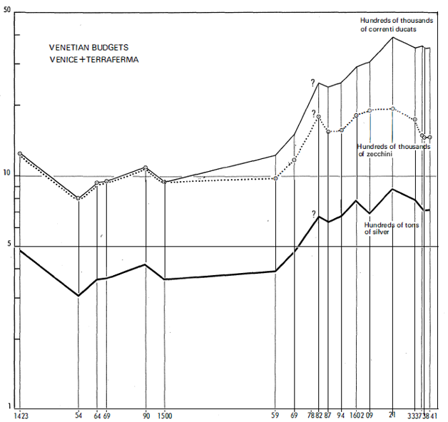
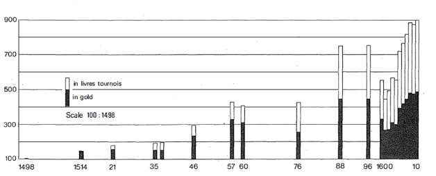
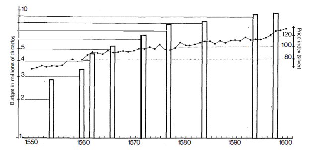

Devlet yayılmadır, başlıca mevcudiyettir. Avrupa’nın dışında, çekilmez ağırlıklarını yüzyıllardan beri dayatmaktadır. Avrupa’da XV. yüzyıldan itibaren kararlı bir şekilde büyümeye başlamıştır. Modernliğin temelleri, Francis Bacon’ın adlandırdığı üzere “üç sihirbaz”dır: Lancaster sütalesinden VII. Henry, Xl. Louis, Katolik Ferdinando. Bunların modem devleti, modem ordu, Rönesans, kapitalizm, bilimsel akılcılığa eş bir yeniliktir. Aslında sihirbazlardan çok önce harekete geçmiş olan devasa bir oluşumdur. Tarihçilerin ittifak ettikleri üzere, ilk modem devlet, II. Friedrich’in (1194-1250) iki Sicilya Krallığı değil midir? Hatta Ernst Curtius, Charlemagne’ın bu alandaki büyük başlatıcı olduğunu söyleyerek eğlenmekteydi.
Her ne olursa olsun, modern devlet eski oluşum ve kurumları ya bozmakla, ya da kırmaktadır: eyalet yönetimleri, özgür kentler, senyörlükler, çok küçük boyutlu devletler. Napoli’nin Aragonlu kralı 1499 Eylülünde, iflasın eşiğinde olduğunu, tehdit altında olduğunu bilmektedir: Milano XII. Louis'nin ordusu tarafından işgal edilmiştir, şimdi onun sırasıdır. Aragonlu “gerekirse Musevi olacağına, krallığını hüzünlü bir şekilde kaybetmek istemediğine, hatta Türklerin kendini tehtid ettiğine” yemin etmektedir. Her şeyi kaybedecek birinin sözleri -ve kaybedenler veya kaybedecek olanlar çok sayıdadır-. Yeni devlet, onu ayrıcalıklı hale getiren, ekonomik hayatın atılımı tarafından taşınarak, bu özden beslenmektedir. Ama evrim gene de son noktasına ulaşamamaktadır: ne V. Carlos'un, ne II. Felipe'nin İspanya'sı, ne de imparatorluk haline gelmek isteyen XIV. Louis'nin Fransa'sı hıristiyanlığın eski birliğini yeniden kurmayı ve bunu kendi çıkarlarına müsadere etmeyi başarabilmektedir. Artık hıristiyan dünyasına “evrensel krallık” şapkası uymamaktadır. Bu konudaki her girişim, birbirinin ardından kırılmaktadır. Belki de bu gösterişe ve sahte parlaklığa dayalı siyasetler, fazlasıyla eski bir oyunu oynamaktadırlar? Gizli gerçeğinin o çağın insanları tarafından henüz yakalanamadığı ekonomik önceliklerin zamanı gelmiştir. V. Carlos’un başaramadığını -Avrupa’yı ele geçirmek- Anvers çok doğal bir şekilde başarmaktadır. XIV. Louis’nin başarısız olduğu yerde, minik Hollanda başarıya ulaşmaktadır. O evrenin kalbidir. Avrupa eski oyunla yenisi arasında ikincisini tercih etmekte, veya daha doğrusu, o kendini dayatmaktadır. Bunun tersine, dünyanın geri kalanı eski kartlarını oynamaktadır: Osmanlıların tarihin dibinden gelen imparatorlukları, Selçukluların imparatorluğunu tekrarlamaktadır; Büyük Moğol Delhi Sultanlığının mobilyalarına yerleşmektedir; Mançuların Çin'i, vahşice devirdikleri Minglerin Çin’ini devam ettirmektedir. Yalnızca Avrupa siyasal olarak (ve yalnızca siyasal olarak değil) yenileşmektedir.
Yeniden biçimlenen, hatta tamamen yeni olan devlet, her zaman olduğu şey olarak kalmaya devam etmektedir: çeşitli işlevlerin ve iktidarların oluşturduğu demet. Araçlar sürekli değişse de, devletin başlıca görevleri hiç de değişmemektedir.
Devletin ilk görevi: kendine itaat ettirmek, belli bir toplumun görünüşteki şiddetini kendi lehine tekelleştirmek, bu toplumu tüm öfkelerinden boşaltmak, onların yerine, Max Weber’in “meşru şiddet” dediği şeyi ikame etmek.
İkinci görev: "ekonomik hayatı yakından, ya da uzaktan denetlemek, mal dolaşımını bilinçli veya bilinçsiz şekilde örgütlemek, özellikle de, masraflarını, lüksünü, "yönetimini" veya savaşı karşılayabilmek için, ulusal hasılanın büyücek bir parçasına el koymak. Hükümdar gerektiğinde, kamusal zenginliğin büyük bir bölümünü kendi lehine seferber edecektir: Büyük Moğol’un hazinelerini, Çin imparatorunun Pekin’deki devasa saray deposunu veya 1730 Kasımında İstanbul’da ölen padişahın dairesinde bulunan, altın ve gümüş sikkelerden oluşan 31 milyon dükayı düşünün.
Sonuncu görev: o olmazsa bir toplumun ayakta duramayacağı ruhani hayata katılmak. Aralarında seçim yaparak veya onlara boyun eğerek, eğer mümkünse ruhani hayattan ek bir güç sağlamak. Aynı zamanda, çoğu zaman geleneğe meydan okuyan canlı kültür hareketlerini sürekli gözetim altında tutmak. Ve özellikle de onların kaygı verici yeniliklerinin taşmasına izin vermemek: örneğin Muhteşem Lorenzo döneminde hümanistlerin veya Fransız Devrimi arefesinde "filozofların"ki gibi.
Düzeni korumak, ama hangi düzeni? Fiili durumda, toplumlar ne kadar kaygılı ve bölünmüşlerse, anasından hakem olarak doğmuş olan devlet, iyi veya kötü jandarma olarak, o kadar sert vurmak zorundadır.
Düzen, tabii ki devlet için ondan yana olan güçlerle, karşı güçler arasındaki bir uzlaşmadır. Yana olanlar için, çoğu zaman toplumsal hiyerarşinin yardımına gitmek gerekmektedir: çok zayıf olan yukarıdakiler, eğer jandarmanın gücü kendi yanlarında olmazsa, nasıl tutunabilirler? Ama bunun karşılığı olarak, işbirlikçi egemen sınıfları olmayan hiçbir devlet yoktur: II. Felipe’yi krallığının Büyük’leri olmadan, İspanya’yı ve muazzam İspanyol imparatorluğunu elinde tutarken düşünemiyorum. Karşı olanlar için, her zaman kalabalık olanları zaptetmek, ödevlerini yapmalarını sağlamak, yani onları çalıştırmak gerekmektedir.
Demek ki, devlet vurduğunda, kendine itaat ettirmek üzere tehtid ettiğinde, mesleğini icra etmektedir. "Kamu yararı adına, bireyleri yoketme hakkına" sahiptir. Üstelik bir de masum olan, görevli cellattır. Seyirlik bir şekilde darbe vursa bile, bu gene de meşrudur. Ve iğrenç bir merakla darağaçları veya işkence alanlarının etrafında yığılan kalabalık, hiçbir zaman eza görenden yana değildir. Palermo’da (8 Ağustos 1613) gene bir idam hükmü, beyaz tövbekarların (bianchi) resmi geçidinin eşliğinde yapılmıştır. Mahkûmun kellesi, sonradan 12 kara meşaleyle çevrelenmiş olarak sergilenmektedir. Kronikçi "Palermo’nun tüm arabaları bu idama gittiler ve bütün insanlar buradaydı, öylesine bir (kalabalık vardı ki), kaldırım gözükmüyordu” demektedir, che il piano non pareva. 1633’de Toledo’da bir insan yakma törenine katılmak için yığılmış olan halk, eğer mahkûmlar askerlerle çevretenmiş olmasalardı, onları taşa tutacaktık 12 Eylül 1642'de Lyon’da, Terreaux meydanında "iki nitelikli adamın, bay Cinq Mars ve bay de Thou’nun kafaları kesilmiştir; o gün meydana bakan evlerin pencerelerinin kiraları yaklaşık iki doublon'a kadar yükselmiştir”.
Paris’te cezaların olağan yeri, Greve meydanıdır. Ölümcül bir hayale kendimizi bırakmayı düşünmeksizin, XVII. yüzyılda, Aydınlanma döneminde, Greve meydanında çekilmiş belgesel bir filmin ne olabileceğini düşünelim (çünkü bir yönetmen, 1974’te, Paris’in bünyesi açısından tek başına anlamlı kabul ettiği, Place de la Republique’e ilişkin bir film yapmıştır); şu yalvaran ilahilerin ve ölümcül hazırlıkların sürekli birbirlerini izledikleri meydanı düşünelim. Halk 1766’da Lally-Tollendal’in idam edilişini görmeye koşmaktadır. Darağacında konuşmaya kalkıştığında da, süngülenmiştir. 1780’de seyirlik gösteri, Dauphine meydanındadır. Babasını öldürmüş olan, yukarı sınıftan biri, kayıtsızlık havasındadır. Umutları o zaman kadar boşa çıkmış olan kalabalık, ilk ızdırap çığlığını alkışlarla selamlayacaktır.
Duyarlıklar kuşkusuz çoğu zaman biçim hiç için diyeceğimiz minik kabahatler karşılığında verilen cezaların yerine getirilme sıklığı yüzünden törpülenmiştir. 1586’da, bir Sicilyalı, evlilik arefesinde nitelikli bir kadının şahane mantosuna dayanamayarak çalmıştır. Kral naibinin önüne sürüklenmiş, iki saat içinde de asılmıştır. Her tür cezanın bir tür envanterini çıkartıyora benzeyen bir anı yazarına göre, Cahors’da “1559’un Careme yortusunda, Carput yakılmış, Ramon tekerlekle çekilmiş, Arnaut kızgın kerpetenle işkence görmüş, Boursquet altı parçaya ayrılmış, Florimon asılmış, Le Negut Valandre köprüsü yanındaki Fourie bahçesinin önünde asılmış, Pouriot Roque des Arcs’da (bugünkü kente 4 km. mesafede) yakılmıştır. 1559’un Careme yortusunda, Bay Etienne Regal’in, Conque de Caors meydanında kafası kesilmiştir... ”. Bu işkence görenler, bu ağaçların dallarına salkım salkım asılıp da, siluetleri birçok eski tabloda yer alan bu insanlar, demek ki gerçekçi bir ayrıntıdan başka bir şey değillerdir: manzaranın bir parçasını oluşturmaktadırlar.
İngiltere bile böylesine sertliklere tanık olmaktadır. İnfazların yılda sekiz kere yapıldığı Londra’da, asmalar seri halindedir ve bu iş, kentin dışında Hyde Park duvarlarının ötesindeki Tyburn’de yerine getirilmektedir. Örneğin, bir Fransız seyyah 1728’de, aynı anda infaz edilen 19 adam asma eylemini seyretmiştir. Tabipler, bizzat mahkûmlardan satın aldıkları gövdeleri almak üzere buradadırlar, mahkûmlar aldıkları parayı “içmişlerdir". Mahkûmların akrabaları infaza katılmakta ve ipler çekilir çekilmez, kurbanların ayaklarından çekerek, can çekişme sürelerini kısaltmaya uğraşmaktadırlar. Bu arada, Fransızımıza göre, İngiltere Fransa’dan daha az acımasızdır. Nitekim “İngiltere’deki adaletin yeteri kadar sert olma"dığını düşünmektedir. “Yol kesen haydutların yalnızca idama mahkûm edilmelerine yönelik bir siyaset olduğunu düşünüyorum, böylece onları nadiren başvurdukları cinayet işleme işinden alakoymak istiyorlar" demektedir. Buna karşılık, Dover’la Londra arasındaki “uçan arabaların", hızlı arabaların yolu üzerinde bile hırsızlıklar sıktır. Öyleyse, bu hırsızlara Fransa’da olduğu gibi işkence yapmak, onları damgalamak gerekmez mi? Bu sayede “daha azalırlar".
Devlet Avrupa dışında, daha da dehşetli olmak üzere, aynı çehreye sahiptir. Çin’de, Japonya’da, Siyam’da, Hind’de infaz bayağı bir şekilde, gündeliğe karışmakta ve bu kez halk kayıtsız kalmaktadır. İslam aleminde adalet hızlı ve kestirmedir. Bir seyyah 1807’de Tahran’daki krallık sarayına girebilmek için, infaz edilenlerin cesetlerinin üzerinden atlamak zorunda kalmıştır. General Gardanne’ın erkek kardeşi olan aynı seyyah, aynı yıl İzmir’de, bölgenin paşasını ziyarete gittiğinde “kapının eşiğine yatırılmış, biri asılmış, biri de kafası kesilmiş (iki ceset) görmüştür”. Bir haber bülteni 24 Şubat 1772’de “yeni Selanik paşası, sertliği sayesinde kente sükûnetini iade etti. Varır varmaz, kentin sükûnetini bozan birkaç asiyi boğdurdu ve askıya alınmış olan ticaret, faaliyetine tamamen kavuştu" diye haber vermektedir.
Ama aslolan sonuç değil midir? Devletin bu şiddeti, bu sert yumruğu, iç barışın, yolların güvenliğinin, pazar ve kentlerin iaşesinin sağlanmasının, dış düşmanlara karşı savunmanın, sürekli birbirlerine eklenen savaşların etkin bir şekilde yürütülmesinin garantisidir. İç barış, benzeri olmayan bir nimettir! Jean Juvenal des Ursins, Yüz Yıl Savaşlarının sonuna doğru, 1440’larda “bir müslüman olsa bile, onlara (Fran- sızlara) bunu verebilecek bir kral gelseydi, ona itaat ederlerdi". Çok sonraları XII. Louis “halkın babası" olduysa, bunun nedeni şansının olması, koşulların yardımıyla krallığın huzurunu yeniden sağlaması ve “ekmeği ucuz tutması"dır. Claude Seyssel (1519) onun sayesinde “disiplin öylesine güçlü bir şekilde korunmuştur ki, hiçbir şey ondan kurtulamamış... ve öylesine darbe yemişlerdir ki, silahlı insanlar bir köylünün bir yumurtasını bile parasını ödemeden almaya cesaret edememişlerdir" diye yazmaktadır. Ve Fransa krallığı bu değerli ve narin varlıkları -barış, disiplin, düzen- koruyabildiği için, Din savaşlarından ve Fronde’un ciddi karışıklıklarından sonra çabucak toparlanabilmiş ve “mutlak" hale gelmiş değil midir?
Devlet tüm bu görevleri için paraya muhtaçtır ve bu ihtiyaç, otoritesini yaydığı ve çeşitlendirdiği ölçüde artmaktadır. Artık eskiden olduğu gibi yalnızca hükümdarın malikânesinin gelirleriyle yaşayamaz. Dolaşımdaki zenginliğe el koymak zorundadır.
Demek ki, devletin belli bir modernliğiyle belli bir kapitalizm, piyasa ekonomisi çerçevesinde aynı anda oluşmaktadırlar. İki hareket arasında birden fazla çakışma vardır. Esas benzerlik, her iki durumda da, biri gizli, diğeri de devletin seyirlik ve debdebeye yönelik hiyerarşilerinin yerleşmesidir. Başka bir benzerlik, modern devletin de tıpkı kapitalizm gibi, zenginleşmek için tekellere başvurmasıdır: “Portekizliler karabiber, İspanyollar gümüş, Fransızlar tuz, İsveçliler bakır, Papa şap” tekeline yönelmektedir. Buna bir de İspanya için, koyun transhümans tekeli olan Mesta ile, Yeni Dünya'yla bağlantı tekeli olan Casa de la Contratacion’u eklemek gerekir.
Fakat devlet, tıpkı kapitalizm gibi, gelişirken, bazen “koltuk değnekleri gibi” üstüne yaslandığı geleneksel faaliyetleri yoketmemekte; devlet öte yandan eski siyasal inşalara uyum sağlamakta, ve otoritesini, parasını, vergisini, adaletini, komuta dilini dayatabilmek için, onların arasına mümkün olabildiğince sızmaktadır. Aynı anda hem sızma, hem de dayatma; fetih ve uyum sağlama vardır. Touraine’in efendisi haline gelen Philippe Auguste, 1203’te artık denier parisis’in yanında tedavül edecek olan denier toumois’yı devreye sokmuştur; bu parisien sistemi ancak geç tarihte, XIV. Louis döneminde kalkacaktır. 1262 emirnamesiyle^ tüm krallığa krallık parasını dayatan, Aziz Louis'dir, ama başlayan fetih hareketi ancak XVI. yüzyılda, üç yüzyıl sonra sona erecektir. Vergi konusunda da aynı yavaşlık: senyörlük topraklarından ilk vergi alan kral olan Yakışıklı Philippe, bu işi kurnazlık ve ihtiyatla yapmıştır. 1302'de ajanlarına şu tavsiyede bulunmaktadır: “Bu vergi işini, baronların iradesine rağmen, onların topraklarında yapmayınız”, veya “ve bu toplama ve vergi işlerini mümkün en kısa sürede ve halkın katılımıyla yapınız ve infaz için yanınızda çavuşlar bulundurunuz”. Oyunun V. Charles döneminde nihayet kazanılabilmesi için, yaklaşık bir yüzyıl gerekmiştir. VI. Charles döneminde tehlikeye giren durum, VII. Charles döneminde yeniden kazanılacaktır; 2 Kasım 1439 emirnamesi taille vergisini kralın emrine bağlamaktadır.
Vergisinin yavaş ilerlemesine, maliyesinin yetersiz örgütlenmesine bakılınca, devlet güç, hatta saçma bir konumda yaşamaktadır: harcamaları düzenli olarak gelirlerini aşmaktadır; ve bu harcamalar günü gününe ve kaçınılmaz iken, gelirlerin ne olacağı kesin değildir. Demek ki hükümdar, önce gelir elde edip, sonra buna uygun harcama yapmaya ve bunun tersine önce harcayıp, sonra gereken kaynakları aramamaya yönelik burjuva bilgeliğine göre bir devlet yönetimini kavrayamamaktadır. Harcamalar önde koşmakta, onları yakalamak düşünülmekte, ama genelde istisnalar kuralı teyid ettiğinden, kimse buna ulaşamamaktadır.
Vergi mükelleflerine yönelmek, onların peşinden koşmak, yeni vergiler icad etmek, lotaryalar yaratmak, hiçbiri derde deva olamamaktadır; açık bir dipsiz kuyu gibi büyümektedir. Bazı sınırların ötesine geçmek, krallığın bütün para stokunu devlet kasasına koymak mümkün değildir. Vergi mükellefinin kurnazlığı ve gerektiğinde öfkesi, etkilidir. XIV. yüzyılda yaşamış bir Floransalı olan Giovanni di Pagolo Morelli, ardıllarına iş alanında öğütler verirken şöyle yazmaktadır: “yalan söylemekten, ateşten kaçınır gibi kaçın” -yalnızca yalanın meşru olduğu, vergiye ilişkin konular hariç-, çünkü bu durumda “bu işi başkalarının malını almak için değil de, seninkinin uygunsuz bir şekilde alınmasını önlemek için yapıyorsun”.- XIII. Louis ve XIV. Louis dönemlerinde, Fransa’daki ayaklanmalar, adeta her seferinde çok ağır bir vergi alınmasından kaynaklanmaktadır.
Bu durumda devlete tek bir çözüm kalmaktadır: borç almak. Bir de bunu yapmasını bilmek gerekmektedir: kredi kolaylıkla çekilip çevrilmemektedir ve kamu borçları Batı'da geç olarak, XIII. yüzyılda genelleşmişlerdir: Fransa’da Yakışıklı Philippe (1285-1314) döneminde, Venedik Monte Vecchio’sunun zamanın karanlıklarında kaybolduğu İtalya’da, kuşkusuz daha erkenden. Gecikme, ama aynı zamanda yenileştirme. Earl J. Hamilton, “kamu borcu, kökleri Yunan-Roma antikitesine kadar uzamayan nadir olgulardan biridir” diye yazabil inektedir.
Finansman biçim ve taleplerine cevap verebilmek için, devlet tek bir bakışta anlaşılması güç, yürütülmesi daha da güç, koskoca bir siyaset geliştirmek zorunda kalmıştır. Venedik zorunlu borç çözümünü seçmediyse, zenginleri devlet tahvili almaya zorlamadıysa ve nihayette, savaş nedeniyle borçlarını ödemekte zorlanmadıysa, bu erken bir kapitalist model olarak görülebilir. Nitekim Venedik XIII. yüzyıldan itibaren, muzaffer İngiltere’nin XVIII. yüzyıldaki modeli olacak bir çözüm icad etmiştir; tıpkı bir İngiliz borçlanması gibi, bir Venedik borçlanmasına her zaman bir grup gelirin serbest bırakılması tekabül etmekte ve faizler ve geri ödeme bunun üzerine dayandırılmaktadır; ve İngiltere’de olduğu gibi, borç belgeleri devredilebilir nitelikte olmakta ve piyasada bazen kambiyo kurunun üstünde, çoğu zaman da altında satılmaktadır. Özel bir kuruluş, borç yönetimiyle ve faizlerin % 5'ten olmak üzere, iki yılda bir ödenmesiyle görevlidir (oysa o sıralar özel faizler %20’dir). Monte adı, Venedik'te olduğu gibi, diğer İtalyan kentlerinde de bu kuruluşu belirtmektedir. Çok iyi bilmediğimiz Monte Vecdıio’nun yerine 1482'de Monte Nuovo geçmiştir; Monte Nuovissimo daha geç kurulacaktır. Cenova'da benzeri bir duruma karşılık, farklı bir çözüme ulaşılmıştır. Venedik’te devlet borcu garanti eden gelirlere egemen olmayı sürdürürken, Cenevizli kreditörler Cumhuriyet'in hemen tüm gelirlerini ele geçirmişler, ve bunları kendi çıkarları doğrultusunda yönetmek üzere, devlet içinde gerçek bir devlet olan, ünlü Casa di San Giorgio'yu (1407) kurmuşlardır.
Avrupa’nın tüm devletleri işin başında bu incelmiş mali teknikleri tanımamıştır, ama hiçbiri de erkenden borç almaktan geri kalmamıştır. İngiltere kralları daha XIV. yüzyıldan önce Luccalılara, sonra uzun süre Floransalılara; Burgonya Valoisları kendi iyi kentlerine; VII. Charles sarrafı Jacques Coeur’e; XI. Louis Lyon’a yerleşmiş olan Medicilere başvurmuşlardır. I. François 1522’de Paris Hotel de Ville’i üzerindeki rantları kurmuştur: bu bir cins monte'dir, kral faiz ödemelerini garanti eden gelirleri Hotel’e bırakmıştır. Papa, devletinin maliyesini dengelemek üzere, çok erkenden krediye başvurmuştur, çünkü bu devlet Hıristiyanlığın ödentilerinin küçüldüğü veya yok olduğu bir dönemde, yalnızca kendi gelirleriyle yaşayamazdı. V. Carlos ihtişam siyasetinin ölçeğinde borç almak zorunda kalmıştır; böylece tüm çağdaşlarının üstüne çıkmıştır. Oğlu II. Felipe, ondan geri kalmayacaktır. Ve kamu borcu daha sonra sadece artacaktır. Amsterdam’da yağılmış olan sermayelerin çoğu, XVIII. yüzyılda Avrupa hükümdar kasalarında erimektedir. Ama, ileride döneceğimiz bu uluslararası kredi piyasası ve borç alanlarla verenlerin krallığı olan bu kent yerine, daha yakından görmek istediğimiz, para peşindeki devlet mekanizması olacaktır. Bunun için de Kastilya'nın az bilinen örneği ile İngiltere'nin klasik örneğini ele alacağız.
Kastilya kralları XV. yüzyılda, bu amaçla serbest bırakılan gelirlerden güvence alan juros (rantlar) ihdas etmişlerdir. Gelirin yeri juros’a adını vermektedir: duruma göre Casa de la Contratacion, Maestrazgas, Puertos Seco, Almojarizfazgo de Indias vb. juros’u denilmektedir. Cervantes’in kişilerinden biri, como quien tiene un juro sobre las gerbas de Extramadura, “Estramadura’daki (Maestrazgas otlaklarının) otları üzerine bir juro’su varmış gibi” parasını yatırmak demektedir.
En büyük rant ihracı V. Carlos ve II. Felipe’nin saltanat dönemlerinde olmuştur. Juro o sıralar çeşitli biçimler altında ortaya çıkmaktadır: sürekli rant (juro perpetuo), ömür boyu (de per vida), ödenebilir (al quitar). Onları garanti eden krallık gelirlerinin az veya çok güvenilir olmalarına göre, iyi ve daha az iyi jurolar vardır. Bir başka çeşitlenme nedeni de, faiz haddinin % 5 ila % 14, hatta daha yüksek oranlar arasında yer almasıdır. İleride Amsterdam veya Londra’da göreceğimiz gibi, örgütlü bir menkul değerler piyasasının olmaması nedeniyle, juros değişken rayiçlerden alınıp satılmaktadır, ama genelde bu rayiç kambiyo haddinin üzerinde olmaktadır. 18 Mart 1577’de, tam da mali bunalımın ortasında, juros değerlerinin % 55 üzerinden satılmaktaydı.
Sözleşme (asientos) ile II. Felipe’ye muazzam miktarlar borç verecek olan iş adamlarına, rehin olarak verilen Juros de caucion’un (garanti rantları) varlığının bir süre devam edeceğini ekleyelim. Özellikle 1552-1557’den itibaren Cenovalı tüccarlar tarafından sağlanan bu asientos, kısa bir süre sonra çok büyük bir dalgalı borç meydana getirmiştir ve Kastilya yönetimi, birbirlerini izleyen iflaslar (1557, 1560, 1576, 1596, 1606, 1627) sırasında, her seferinde aynı yolu tutmuştur: yüzer borcun bir bölümünü konsolide borç haline dönüştürmek -bizim için şaşırtıcı olmayan bir işlem-. 1560-1575 arasında bu alacaklılara verilen juroların yalnızca caucion -basit rehinler- değil de, aynı zamanda iş adamlarının halka bizzat satma hakkına sahip oldukları Juros de resguardo da oldukları kabul edilmiştir. Bunu yapabilmesi için, iş adamının kupon ödemesini sağlaması ve krala, hesapların kapatılması esnasında başka jurolar (aynı faiz haddinden) vermesi gerekir.
Bu uygulamalar, Cenovalı hombres de negocios'un, düşükken alıp, yüksekken satıp, “kötü konumlu"ları, “iyi konumlu”larla değiştirerek, juros piyasasını ellerinde tuttuklarını göstermektedir. Piyasanın efendisi olarak, adeta tam istedikleri hedefe oynamaktadırlar. Ama bu durum, aralarından en ünlüsü olan, Salerno prensi Nicoloa Grimaldi’nin (bu prestijli Napali ünvanını para karşılığında satın almıştır), özellikle juros üzerinde olmak üzere, fazlasıyla riskli spekülasyonların sonucunda, 1575’te iflas etmesine engel olmamıştır. Zaten, uzun dönemde İspanyol hükümeti, katı bir tedbir olan iflasın, elinin altındaki tek yol olmadığının farkına varmıştır: juros faizlerinin ödenmesini askıya alabilir, faiz haddini düşürebilir, ramları dönüştürebilirdi. 1582 Şubatında Il. Felipe’ye, hadleri % 6-7 olan ve Sevilla alcabalas’ına bağlanmış olan juros faizlerini düşürmesi önerilmiştir. Rant sahipleri ya menkul değerleri yeni faiz haddinden (belge ne kadar olduğunu belirtmemektedir) muhafaza edecekler, ya da paralarının ödenmesini isteyeceklerdir. Hindler filosunun ilk gelişinde, bu iş için bir “milyon altın” tahsis edilecektir. Fakat bizi bilgilendiren Venedikli ödemelerin yavaşlığı nedeniyle, rant sahiplerinin ellerindeki menkul değerleri, yeni faiz hadlerine razı üçüncü kişilere satmayı tercih edeceklerini düşünmektedir. Sonunda bu işlem gerçekleşmeyecektir.
İspanyol maliyesinin dramı, her zaman yeni asientos'a başvurmak zorunda olmasıdır. V. Carlos döneminde, bu avansları belgeleyen ilk senetler, çoğu zaman beklenmedik anlarda sürülmekte ve Yukarı Alman bankacılarının, özellikle de Welserler ve onlardan da fazla Fuggerlerin elinde toplanmaktaydı. Bu para krallarını kınamayalım. Fakat onlar haklı olarak bu senetlerden kaygı duyurmuşlardır. Nakit paranın kasalarından çıktıgına tanık olmaktadırlar. Bunların yerlerine dönmeleri için, her zaman beklemek, biraz tehtid etmek, rehin almak gerekmektedir. Fuggerler böylece, Maestrazgos’un (Santiago, Calatrava ve Alcantara tarikatlarından odakları) efendileri ve Almaden cıva madenlerinin işleticileri haline geleceklerdir. Daha da kötüsü, borç verilen parayı geri alabilmek için, yeniden borç vermek gerekmektedir. 1557 iflasından itibaren, uygulamada asientos oyununun dışında kalan Fuggerler, alınamazı alma umuduyla, yüzyılın sonunda bu oyuna yeniden katılmışlardır.
1557’ye doğru Cenovalı bankacıların, Grimaldiler, Pinelliler, Lomelliniler, Spinolalar, Doriaların saltanatı başlamıştır; bunların hepsi de San Giorgio Cumhuriyetinin nobili vecchi'sindendir. Giderek genişleyen işlemleri için, Besançon fuarları denilen fuarları örgütlemişlerdir, bunlar 1579’dan itibaren, uzun bir süre Piacenza’da kurulacaklardır. Bundan sonra Cenovalılar, hem İspanya kamusal ve özel servetinin efendileri olacaklar (İspanya’da soylu veya ruhbandan ve özellikle “memurlar”dan kim onlara para emanet etmezdi ki?), hem de bu sayede Avrupa’nın harekete geçirilebilir tüm servetinin efendileri olacaklardır. İtalya’da herkes Besançon fuarlarına oynayacak ve başlarına gelecekleri hiç bilmeden, Cenovalılara borç vereceklerdir. Örneğin böyle yapan Venedikliler, 1596 İspanyol iflasının bedelini çok ağır ödemişlerdir.
Cenevizli tüccarları Katolik kral için vazgeçilmez kılan, onların Amerikan gümüşünü Sevilla’ya getiren kesikli akımı, sürekli bir akım haline dönüştürmeleridir. 1567’den itibaren, Alçak Ülkeler’de savaşan İspanyol birliklerine düzenli olarak her ay ücret ödemek gerekmektedir. Bunlar ödemelerin altınla yapılmasını istemişler ve bu talep II. Felipe’nin saltanatının sonuna kadar (1598) kabul görmüştür. Demek ki, Cenovalıların Amerikan gümüşünü bir de altına çevirmeleri gerekmektedir. Bu ikili görevi başarmışlar ve Katolik krala 1627 iflasına kadar hizmet vermişlerdir.
Bu tarihte sahnenin ön tarafını terketmişlerdir. Bu İspanyol süvarinin, Alman bankacılarından sonra, çatlattığı ikinci binek hayvanıdır. 1620-1630’lu yıllarla birlikte, bayrağı Portekiz Yeni Hıristiyanları almıştır. Durumu bilen Conde Duque Olivares, onları bu işe salmıştır: aslında bunlar Alçak Ülkeler’in büyük Protestan tüccarlarına adlarını kullanma izni veren, naylon kişilerdir. İspanya onların aracılığıyla, tam da 162l’de Birleşik Eyaletler’e karşı yeniden savaşa giriştiği sırada, Hollanda kredi akımlarından yararlanmaktadır.
Hiç kuşku yoktur ki, İspanya azamet döneminde borç almayı iyi bilememiş ve kendine borç verenler tarafından yolunmaya sesini çıkartmamıştır. Ülkenin efendileri bazen tepki göstermeyi, hatta intikam almayı denemişler. II. Felipe Cenevizlilerden kurtulmak için 1575 iflasını örgütlemiştir. Boşuna. Ve onlar 1627’de kendi istekleriyle vazgeçecekler, veya daha doğrusu asientos'u yenilemeyi reddedeceklerdir. Kapitalizm daha şimdiden, uluslararası ölçekte, dünyanın efendisi olarak davranabilmektedir.
İngiltere XVIII. yüzyılda borç siyasetini ve bundan da iyisi, P. G. M. Dickson'ın “mali devrim” adını verdiği şeyi -bu doğru bir terimdir, çünkü gerçek bir yeniliğe tekâbül etmektedir, ama eğer en azından 1660’tan beri harekete geçen ve 1688’de uykuya yatan sürecin yavaşlığı ve ancak Yedi Yıl Savaşının (1756-1763) başında tamamlandığı düşünülecek olursa, tartışmalıdır- başarmıştır. Demek ki bu süreç uzun bir olgunlaşma (yaklaşık bir yüzyıl), uygun koşullar, artı sürekli bir ekonomik atılımı gerektirmiştir.
Kamu kredisinin dönüşümüne yol açan bu mali devrim, bütünsel yönü açık olan İngiliz maliyesindeki derin ve önceden meydana gelen bir yeniden örgütlenmenin sayesinde mümkün olabilmiştir. İngiliz maliyesi kabaca 1640 ve 1660'ta, yapısı itibariyle o zamanın Fransız maliyesine benzemektedir. Manş’ın ne bu, ne de öteki tarafında, yalnızca devlete bağlı olan, merkezileşmiş bir kamu maliyesi vardır. Çok fazla şey, vergi mültezimlerinin serbest girişimine terkedilmiştir. Bunlar aynı zamanda kralın beratlı borç vericileri olup, kendi işleri olan finansçılar, devlete tabi olmayan memurlardır, çünkü bunlar görevlerini satın almışlardır. Tabii İngiltere kralının Londra City’sine, Fransa kralının da kendi iyi Paris kentine sürekli başvurmalarını hesaba katmıyoruz. Devletin asalakları olan aracılardan kurtulmaya dayanan İngiliz reformu, gizlilik içinde ve sürekli bir tarzda tamamlanmıştır, ama herhangi bir yönetim bağını görmek mümkün değildir. Bu konudaki ilk tedbirler, gümrüklerin (1671) ve tüketim vergisinin (1683) reji haline getirilmesidir (bu tüketim vergisi Hollanda’dan alınma bir usuldür); sonuncu tedbirlerden biri, Lord Treasurer görevini 1714’te kurulmasıdır; buna bağlı olarak Board of Treasuıy, bir Hazine Meclisi kurulmuştur. Bu meclis, gelirlerin nihayette Exchequer'e doğru akışını gözetim altında tutacaktır. Bugünkü dilimizle, maliyenin ulusallaştırılması gerçekleştirilmiştir diyebiliriz. Bu yavaş süreç içinde, bu amaca ulaşmak için İngiltere Bankası’nın denetimi de gerekmekteydi (bu denetim ancak XVIII. yüzyılın ortasına doğru kurulabilmiştir, oysa banka 1694’te kurulmuştur). Ayrıca, daha 1660’tan itibaren Parlamentonun yeni ödenek ve vergilerin oylanmasındaki belirleyici müdahalesi de etkili olmuştur.
Bu ulusallaştırmanın derin bir bürokratik dönüşüm olduğunu, devletin ajanlarının toplumsal ve kurumsal tüm ilişkilerini dönüştürdüğünü, iki Fransız gözlemcinin, ne yazık ki çok kısa bir düşüncelerinden itibaren yargılayabiliyoruz. XIV. Louis yönetimi, Ticaret meclisinde Lyon temsilcisi Anisson ile Bordeaux temsilcisi Fenellon’u İngiltere’ye, bir ticaret antlaşmasının görüşmelerini yapsınlar diye (bu antlaşma gerçekleşmeyecektir), iki kere göndermiştir. İşte 24 Ocak İ713’te, genel Maliye denetçisi Desmaretz’ye Londra’dan şöyle yazmaktadırlar: “diğer heryerde olduğu gibi, memurlar burada da bunlarla çok ilgili olduklarından, işi parayla bitirmeyi düşünüyoruz, öylesine ki, onlara sunduğumuz hediyeler hiç de yozlaşma kokmuyor, çünkü burada her şey reji”. Bir memur devleti temsil ettiğinde, yozlaşma olduğu daha mı az göze batar, bunu ileride göreceğiz. Kesin olan şey, Fransız gözlemcilere göre, modern anlamdaki bir bürokrasiye yakın olan İngiliz örgütünün, bildiklerine nazaran özgün ve farklı olmasıdır: “burada her şey reji”.
Her halükârda, devletin mali mekanizmasının ele alınması olmasaydı, İngiltere becerebildiği şekliyle etkin bir kredi sistemini kuramazdı (üstelik o çağda yaşayanlar bu sistemi hep eleştirmişlerdir). Sistemin oturtulmasında, İngiltere kralı olan Hollanda stathouder'i III. William’ın fazla bir etkisinin olduğunu düşünmeyelim. Kuşkusuz bu kral işin başında, “Hollanda tarzında” çok miktarda borç almış, bu işi çok sayıda olan devlet rantı sahiplerini, devlete bağlamak için yapmıştır. Ama İngiliz hükümeti Augsburg ligası savaşının (1689-1697), sonra da İspanya Veraset savaşının (1701-1713) güçlüklerine göğüs gerebilmek için, geleneksel, hatta yürürlükten kalkmış usullerle borç almıştır. Belirleyici yenilik olan, uzun vadeli borçlanma yavaş yerleşmektedir. Hükümetler düşük faizli, uzun dönemli borçlar için bir piyasanın bulunduğunu; reel vergi hacmi ile mümkün borç hacmi (bu hacim, hiçbir zarara yol açmadan bütünün üçte birine kadar çıkabilir) arasında sanki önceden kurulu bir oran olduğunu; aynı oranın kısa vadeli borç kitlesi ile uzun vadeli borç kitlesi arasında da bulunduğunu; yegane gerçek tehlikenin faiz ödemesini belirsiz veya önceden iyi tahmin edilemeyen kaynaklara bağlamak olduğunu yavaş yavaş öğrenmektedirler. Uzun zaman tartışılan bu kurallar, ancak oyun berrak bir şekilde ve büyük ölçekte yürütüldüğü zaman açığa çıkacaklardır. Kısa vade-uzun vade diyalektiği yavaş yavaş anlaşılacaktır. Ama bu, Utrecht barışı yılı olan 1713'te daha gerçekleşmemiştir. Uzun vadeli borçlara hâlâ “repayable or self liquidating" denilmektedir. Uzun vadeli borç, sanki kendiliğinden oluyormuş gibi, sürekli borç haline dönüşmüştür. Bundan sonra, artık devlet tarafından ödenmesi gerekmemektedir ve devlet dalgalı borcunu konsolide borç haline dönüştürürken, kredi ve nakit kaynaklarını tüketmemiş olmaktadır. Borç verene gelince, alacağını bir üçüncü kişiye aktarabilir -bu 1692’de kabul edilmiştir- ve böylece, istediği her keresinde, alacağını geri alabilir. Bu bir mucizedir: devlet geri ödememekte, alacaklı parasını istediği zaman elde etmektedir.
Mucize bedava olmamıştır. Kısa bir süre sonra canavar kesilen, borçlanma düşmanlarının, açılan geniş tartışmada üste çıkamamaları gerekmiştir. Böylesine bir sistem devletin “kredi”sine, halkın güvenine dayanmaktaydı, demek ki borç ancak Parlamento tarafından, her seferinde faizlerin düzenli ödenmesine tahsis edilmiş yeni gelirlerin yaratılması halinde mümkün olabilirdi. Bu oyunda halkın bazı katmanları, toprak sahipleri (land tax ile gelirlerinin beşte birini devlete ödemektedirler), tüketiciler veya vergilendirilen herhangi bir ürünün ticaretini yapanlar, işlemin harcamalarını karşıladıkları ve bir asalaklar, yararlanıcılar sınıfının, rantiyelerin, borç vericilerin, toptancıların (gelirleri vergilendirilmektedir), çalışkan halkı küçümseyen ve tavuskuşu gibi kabaran şu moneyed men’in bu işten çıkar sağladıkları duygusuna sahiptirler. Bu çıkarcıların kavga çıkartmakta yararları yok mudur, çünkü devleti yeni borçlanmalara ve faiz haddini yükseltmeye yöneltecek bir savaş onların yararınadır. Yüzyılın ilk büyük siyasal kırılması olan İspanya Savaşı (1739), kısmen onların eseri olacaktır. Bunun sonrasında, bugün bile İngiliz dengesinin esas temelinin orada olduğunun görülebileceği konsolide borç sistemine, o dönemin insanları tarafından, sağlıklı bir ekonominin iyi ilkeleri adına, ağır bir şekilde saldırılması normaldir. Bu sistem fiili durumda, yalnızca koşulların dayattığı pragmatik bir sonuçtan ibarettir.
Borç politikasının başarısını, büyük tüccarlar, kuyumcular, borç ihracında uzmanlaşmış bankacılık firmaları, tek kelimeyle Londra’nın iş çevresi, ulusun belirleyici kalbi sağlamıştır. Yabancı da bu konuda rol oynamıştır. 1720’li yıllar civarında, Walpole döneminin eşiğinde ve bu dönemin tümü boyunca, Hollanda kapitalizmi işlemin belirleyici bir zenaatkarı olarak ortaya çıkmıştır. 19 Aralık 1719’da Londra’dan “fonlarımızda kullanılmak üzere, yüz bin sterlinden daha fazla yeni bir borçlanma” haber verilmektedir. Funds, İngiliz borçlarını ifade eden İngilizce kelimedir. Bazen securities, annuities de denilecektir.
Hollandalıların kitlesel olarak İngiliz tahvili almalarını nasıl açıklamalı? Faiz haddi İngiltere’de çoğu zaman (her zaman değil) Birleşik Eyaletler’de uygulanan hadlerin üzerindedir. Ve İngiliz fonları, Amsterdam fonlarının tersine, vergiden muaftırlar, bu bir avantajdır. Öte yandan, Hollanda İngiltere’de ticari bir fazlalığa sahiptir: Londra’ya yerleşmiş olan Hollanda firmaları için, İngiliz fonları kolay ve rahatlıkla karlı bir şekilde harekete geçirilebilen bir plasman meydana getirmektedirler. Bazıları tahvillerinin gelirlerini yeniden yatırmaktadırlar. Böylece Amsterdam piyasası, yüzyılın ortasından itibaren, Londra piyasasıyla bir blok oluşturmaktadır. Nakit veya vadeli İngiliz fonları üzerindeki spekülasyon, her iki piyasada da Hollanda kumpanyalarının hisse senetleri üzerindekinden çok daha faal ve çeşitlenmiş durumdadır. Bu hareketlerin kabaca basit bir şemaya indirgenmelerinin mümkün olmamasına rağmen, Amsterdam İngiliz fonlarının İngiltere’deki kısa vadeli işlemleri dengeleme görevinde, paralel piyasa rolünü oynamaktadır. Hatta, Hollandalıların belli bir anda, İngiliz fonlarının dörtte veya beşte birine sahip oldukları bile iddia edilmiştir. Bu aşırıya kaçmaktır. Isaac de Pinto (1771) “Londra'nın tüm bankacılarından biliyorum ki, Yabancı’nın ulusal borçtaki payı sekizde birden fazla değildir” diye yazmaktadır.
Çok da önemli değil! İngiliz ihtişamının başkalarının zararına; Hollandalı, ama aynı zamanda Fransız, İsviçreli veya Alman borç vericilerin zararına kurulmasının şaşırtıcı bir yanı yoktur. XVI. ve XVII. yüzyıllarda Floransa veya Napoli veya Cenova rantları, yabancı katılımı olmasaydı, o kadar güçlü olamazlardı. Raguzalılar 1600’e doğru bu ramların 300.000 dükalık kısmını ellerinde tutmaktaydılar. Sermayeler sınırlarla alay etmektedirler. Sermaye güvenliğe doğru gitmektedir. Ancak, acaba İngiliz ihtişamını sağlayan bizatihi sistem midir, mali devrim midir? İngilizler sonunda bunun böyle olduğuna ikna olmuşlardır. 1769’da Every man his broken’ın yedinci yayınlanışında, Thomas Mortimer kamu kredisinden “standing mircacle in publics, which at once astonishes and over-awes the states of Europe" olarak söz etmektedir. Pinto’nun sıklıkla zikrettiğimiz elkitabı, 1771’de işi açığa çıkartmaktadır. Pitt 1786’da kendi kendine “bu ulusal borç konusunda, ulusun güç ve bağımsızlığının ona dayandığına ikna” olduğunu söylemekteydi.
Ancak, aslında İngiliz konsolide borcunun avantajlarının farkında olan, Londra’daki Rus elçisi Simolin, 1781’den itibaren Londra’da “devasa ve her türlü hayalin üstünde" hale gelen pahalılığın nedenlerinden biri olarak onu görmektedir. Eğer İngiltere aynı anda dünyanın egemenliğini ele geçirmeseydi, bu borç ve fiyat tırmanışının tamamen başka etkiler yapacaklarını düşünmemek mümkün olamazdı. Örneğin eğer İngiltere, kendi atılımına destek noktası görevini gören Kuzey Amerika ve Hindler gibi iki bölgede Fransa’ya üste gelemeseydi, ne olurdu?
Kamu maliyesi ancak bir ülkenin ekonomik hayatının çerçevesi içinde anlaşılabilmektedir. Ama bize kesin rakamlar, açık maliyeler, denetlenebilir ekonomiler gerekmektedir. Bu gibi şeylerin hiçbirine sahip değiliz. Ama bütçelere sahibiz, aslında hükümet harcama ve gelir dökümleri diyelim (çünkü bütçe kelimesi tam anlamına, ancak XIX. yüzyılda kavuşmuştur). Bunların nakit para cinsinden olduklarını düşünürsek, saflık etmiş oluruz.
Böylece, XIII. yüzyıldan 1797’ye kadar Venedik Bilanci’sine; 1416’dan 1477’ye kadar Burgonya Valoislannın hesaplarına sahibiz. Kastilya’ya, yani İspanya’nın en canlı kesimine ilişkin XVI.-XVIII. yüzyıl rakamlarını derleyebiliriz belgeler Simancas’da durmaktadır. İngiltere için oldukça tamam rakamlara sahibiz, ama bunların sıkı bir eleştiriden geçmeleri gerekiyor. Fransa için, büyüklük sıralamalarından başka bir şey yok. Osmanlı imparatorluğu konusunda, bir araştırma yürütülmektedir. Çin için, oldukça kuşkulu olsa da, rakamlara sahibiz. Büyük Moğol veya “czar"ın gelirleri hakkında, bir muhtıra veya bir seyahatnamenin rastlantısı içinde, birkaç rakama sahibiz.
Ancak, sorumlular kendi evlerinde cereyan edenler konusunda, yalnızca bulanık bir fikre sahiptirler. Geçici bütçe kavramı diye bir şey yoktur. Fransız hükümeti tarafından 1 Mayıs 1523’te düzenlenen ve belli bir gecikmeyle 1523 yılı için geçici bir tablo olan, "genel maliye durumu" nadir bir şeydir. Aynı şekilde, XVII. yüzyılda Katalik kral tarafından Sommaria’ya, yani Napoli hesap meclisine geçici bir bütçe ile, yıl sonunda nihai bir bütçe gönderilmesi emri de, nadir rastlanılan bir durumdur. Madrid’deki büroların bu rasyonelliği açıklamasını, Napali krallığının tüm kaynaklarının sonuna kadar sömürülmek istenilmesinde bulmaktadır. Hatta Madridli memurlar, verilen emirlerin yerine getirilmemesi halinde, Sommaria danışmanlarını, maaşlarının yarısını veya tamamını kesmekle tehtid etmektedirler. Oysa bu danışmanların karşısına büyük güçlükler çıkmıştır. Bunlar mali yıl ile, Napoli yıllık bütçesinin tam örtüşmediklerini söylemektedirler. Tuz vergisinin Abruz- zelerdeki başlangıcı 1 Ocaktır, ama Calabria'nın liman depolarında aynı başlangıç 15 Kasımdır; ipek vergisi l Hazirandan itibaren toplanmaktadır ve bu iş böyle sürüp gitmektedir. Nihayet, vergi yerel olarak, krallığın bir noktasından diğerine değişmektedir. Madrid tarafından talep edilen çalışma, ne kadar tehtid savrulursa savrulsun, ancak belli gecikmelerle yapılabilir. Bu durumda, 1622’nin nihai bilançosu Madrid’e 23 Ocak 1625’te; 1626’nın bilançosu Haziran 1632’de; 1673 bilançosu da Aralık 1676’da varmıştır. Sonuçlar arasında, bir uyarı yer almaktadır; böyle yapmak vergileri in mano del demonio, şeytanın eline vermek olur!
Fransa’da da aynı durum. Kamu maliyesine, “çifte hesap” yoluyla hesap dene- mitinin getirilebilmesi için, 1716’nın Haziran ayını beklemek gerekecektir. Ama burada, harcamalar önceden yönlendirmeye yönelik bir araç değil de, onların denetimi söz konusudur. Bu bütçelerin yönetiminde eksik olan şey tahmindir. Harcamaların ritmi, ancak nakitlerin gözlemi yoluyla gözetim altında tutulabilmektedir. Kasaların düzeyi kritik sınırları işaret etmekte, mali eylemin gerçek takvimini oluşturmaktadırlar. Calonne bilinen dramatik koşullarda, 3 Kasım 1783’te Genel Maliye Denetçiliği görevine geldiğinde, Hazine’nin tam durumnu anlayabilmek için aylarca beklemek zorunda kalacaktır.
Sahip olduğumuz veya oluşturduğumuz, tam olmayan bütçeler, en fazlasından “gösterge” değerine sahiptirler.
Bunlar bize, bütçelerin artan fiyat konjonktürüne göre dalgalandıklarını öğretmektedirler; demek ki, devlet yükselme hareketlerinden mağdur olmamakta, onları izlemektedir. Devletin başına, gelirleri genel endeksin peşinde sürüklenen senyörlerin başına gelen şey gelmemektedir. Demek ki bir devlet, dünün düzeyindeki gelirlerle, yarının yüksekliğindeki harcamalar arasında asla sıkışmayacaktır. İzleyen grafikte, XVI. yüzyıl Fransız maliyesine ilişkin olarak, taslak halinde verilen gösterim, aynı dönemdeki İspanyol veya Venedik maliyelerine ilişkin olarak daha iyi düzenlenmiştir. Ancak, E. Le Roy Ladurie, Languedoc örneğinden hareketle, XVI. yüzyılda fiyatlardaki hızlı artışa nazaran, devlet gelirlerinde belli bir gecikme olduğunu, açığın 1585’ten itibaren kapatılabildiğini düşünmektedir. Ama kuşku dışı olan şey, Fransız devlet gelirlerinin XVII. yüzyılda yükseldiğidir. Eğer oyunu konjonktür yönetiyor olsaydı, bu gelirlerin fiyat düşmeleriyle birlikte gerilemeleri gerekirdi. Oysa Richelieu döneminde (1624-1642), bu gelirler iki veya üç katına çıkmışlardır. Bu artış, sanki bu asık suratlı dönemde, devlet “korunaklı tek girişim”miş, gelirlerini istediği kadar çoğaltabilirmişçesine gerçekleşmiştir. Kardinal vasiyetnamesinde, Maliye yöneticilerinin “tek bir tuz vergisini, İspanya kralının Hindlerine eşit kıldık”larını hatırlatmakta değil midir?25°
Birçok anormalliği açıklayacak olan bağ, vergi kitlesi ile verginin bir parçasını oluşturduğu ulusal hasıla arasında varolan bağdır. Venediğe ilişkin bir hesaplamaya göre -ama Venediğin özel bir örnek olduğunu kabul etmek gerekir-, verginin gayrisafi ulusal hasıla içindeki payı % 10-15 civarındadır. Eğer Venedik 1600’de 1.200.000 dükalık bir gelire sahipse, ulusal hasılanın 8-12 milyon civarında olduğunu düşünürüm. Kendileriyle tartıştığım, Venedik tarihi konusunda uzman olan kişiler, bu rakamları düşük veya vergi yükünü çok yüksek bulmaktadırlar. Her halükârda, Venedik’ten daha geniş ve daha az kentleşmiş bir bölgenin (okuyucuyu aşırı hesap ve tartışmalara sürüklemeden) vergi yükünün %5 civarında olduğu aşikârdır. Merkezi devletin genişlemesi, onun çok dar bir gövdeye sahip olan kent- devletinkine nazaran daha düşük vergi taleplerinin olmasından teşvik bulmuş değil midir? Bütün bunlar önceden düşünülmeden gerçekleşmiştir.
Ama eğer tarihçiler birçok ülkeye ilişkin olarak, aynı hesaplamaya girişecek olursa, bu noktada ulusal hasılanın hareketini görebilmenin bir aracı olup olmadığını anlamak mümkün olacaktır. Bu olmadıkça, gelişme hakkındaki günümüz incelemelerinden ödünç alınan açıklama ve aydınlatmaların geçmişe taşınması yanıltıcı olacaktır. Çünkü her şey ulusal hasılanın bütünsel kitlesine nazaran kıyaslanmalı ve tartılmalıdır. Örneğin bir tarihçi yakınlarda, XV. yüzyılda Batı Avrupa’ya ilişkin olarak, savaş harcamalarının ulusal gelirin % 5-15’i arasında dalgalandığını ileri sürmüştür. Bu yüzdeler kesin ölçümler değil de, kapı aralığından görülenler olsalar bile, bu çok eski sorunlara biraz ışık tutulmuş olmaktadır. Çünkü alt sınır olan % 5, bu uzak dönemlerde grosso modo, olağan bir bütçenin haddini temsil etmektedir; % 15 ise, felâkete yol açmadan sürmesi mümkün olmayan bir taşmadır.

1 - Venedik Örneği

2 – Fransa Örneği
BÜTÇELER KONJONKTÜRÜ İZLER
Venedik bütçesi üçlüdür: Kent, Terra Ferma, İmparatorluk. Rakamların çoğu zaman tahmini olduğu İmparatorluk bir kenara bırakılmıştır. Grafik esas olarak Bilanci Generali’den hareketle, Gemma Miani tarafından hazırlanmıştır. Üç eğri Venedik ve Terra Ferma vergi hasılatının toplamına tekabül etmektedir: Nominal rakamlar (ducati correnti cinsinden), altın cinsinden rakamlar (sekine olarak hesaplanmıştır), gümüş cinsinden rakamlar (on ton gümüş cinsimler). F. C. Spooner tarafından Fransa’ya ilişkin olarak hesaplanan rakamlar, çok yumuşatılmışlardır. Livre tournois cinsinden nominal rakamlar ve altın cinsinden hesaplanan rakamlar. Bu rakamlar ne kadar yetersiz olsalar da fiyat bağlantılı bütçe konjonktürleri olduğunu işaret etmektedirler.

3 – İspanya Örneği
Fiyat/gümüş endeksi Earl J. Hamilton’dan alınmıştır. Bütçeler milyon Kastilya dükası cinsinden hesaplanmıştır. Bu muhasebe parası olup ele alınan dönem boyunca değişmemiştir. Bütçe tahminleri, Alvaro Castillo Pintado'nun yayınlanmamış bir çalışmasından alınmıştır. Gelir hesaplarının yetersizliğine rağmen, bu kez fiyat konjonktürü ile vergi girişleri hareketi arasındaki çalışma, önceki örneklere nazaran daha açıktır. Çizdiklerimize benzeyen geçici grafikler Sicilya ve Napoli Krallığı, hatta Osmanlı imparatorluğu için de hesaplanabilir, Ömer Lütfü Barkan bu işe kendi hesabına girişmiştir bile.
Vergi sistemi ve devletin yönetim örgütünün çifte yetersizliği, sürekli olarak borca başvurma, finansçıların önceden öncelikli hale gelmelerini açıklamaktadır. Bunlar devlete sağlam ve sıkı bir şekilde bağlanmış olan, kapitalizmin ayrı bir sektörünü oluşturmaktadırlar. Bu nedenle onları bir önceki bölümde ele almadım. Önce devleti takdim etmek gerekiyordu.
Kelimenin kendisi bile ikircilikten kurtulamamaktadır. Finansçı’nın eski dilde bir bankacı olmadığı bilinmektedir. Bankacı kendi ve daha da fazlası, müşterilerinin parasıyla meşgûl olurken, o devletin parasıyla uğraşmaktadır. Ama bu ayırım oldukça yararsızdır. Aynı şeyi, kamu finansçısı ile özel finansçı arasındaki ayırım için de söylemek mümkündür. Nitekim, hiçbir finansçı yalnızca finans mesleğiyle yetinmemektedir. Her zaman başka işler yapmaktadır -özellikle bankacılık- ve bu başka işler, çoğu zaman çok geniş ve çeşitlenmiş olan bütünsel bir oyunun içinde yer almaktadırlar.
Ve bu hep böyle olmuştur. Jacques Coeur VII. Charles’ın sarrafıyken, aynı zamanda tüccar, maden girişimcisi, armatördür: hu sonuncu sıfatından ötürü, Venedik tekelinden bağımsız olmak isteyen bir Doğu Akdeniz ticaretini, Aigues-Mortes’dan itibaren harekete geçirmektedir. Yargılanmasına ilişkin belgeler, onun nihayetsiz ve çok sayıdaki iş ve girişimlerinin dökümünü bize sunmaktadırlar.- Daha sonra, Fransız krallığının mali tarihi boyunca çok kalabalık olarak karşımıza çıkan “tüccarlar”, “Partisans" (bir borç partisi peşindeki iş adamları), “iş adamları” da kamu maliyesine ancak yarı yarıya girmişlerdir; terimleri zorlamaya gerek kalmadan, bunların çoğu zaman kralın hizmetindeki, ama her şeyden önce kendileri için çalışan bankacılar oldukları söylenebilir. Borç verdikleri parayı borç almaları gerekmekte ve bu nedenle, zorunlu olarak karmaşık kredi oyunlarına katılma durumunda olmaktadırlar. Örneğin Mazarin’in hizmetindeki İtalyan finansçılar Serantone, Cenami, Contarini, Airoli, Valemi’nin yaptıkları budur. Kardinal, belli nedenlerle bunları ya Cenova’ya, ya da Lyon’a yerleştirmişti; bu da onlara çoğu zaman riskli olmasına rağmen, kambiyo senetleri üzerinde sürekli ve verimli bir oyun oynamalarına olanak vermekteydi.- İşte örneğin, XV. Louis döneminde güçlü bir Languedoclu finansçı ailesi olan Castanierler. Bunların talihi İspanya Veraset savaşıyla başlamıştır. Ailenin bazı üyeleri Carcassanne taille vergisini toplamaktadır, diğerleri de Hindler kumpanyasının müdürleridir; oğul veya yeğenleri Toulouse parlamentosundadırlar, sonradan devlet bakanı olacaklardır. Carcassonne’da Castanier manüfaktürleri çalışmaktadır. Paris’te bir Castanier bankası vardır. Cadiz ve Bayanne armatörleri Castanierlerle ortaktırlar. Chaussinaud-Nogaret’nin XVIII. yüzyılın ilk yarısının “tüccar- bankacı-girişimci-armatör-finansçı”sı dediği cinse dair başka örnekler, Gillyler veya Crozatlardır. Kralın başta gelen kreditörlerinden olan ve Hindler kumpanyasını (Samuel Bemard’la birlikte) düzeltmek isteyen Amaine Crozat, Negre burnu kumpanyasının, Gine kumpanyasının kuruluşlarına, asiento anlaşmasına (İspanyol Amerika’sına zenci nakli konusunda), Güney denizi kumpanyasına katılmıştır. Kısacası, Fransa’nın tüm büyük uluslararası ticaretine. 1712’de Lousiana ticaret tekelini elde etmiştir.
Ama, finansçı bir kesimini oluşturduğu devlete borç vermek yerine, hizmetlerini dışarıya, başka hükümdar veya devletlere sattığında, durum farklıdır. Acaba bu, farklı, daha üstün bir meslek midir? 1778’de Hollanda görüşünü temsil eden bir tanığın iddia ettiği budur: “finansçılık sanatını, İtalya’nın Fransa’da uğursuz bir temsilcisi olduğu şu tahripkar sanatla karıştırmamak gerekir. İngiltere’de geçici çare adamları denilen ve Fransa’da partisans, traitans ve mültezimleri oluşturan ve bazen aptalca bir şekilde becerikli bulunan bu sanat karşısında, aklı başında her hükümet uyanık olmalı ve onu yasaklamalıdır”. Bu “üst”, uluslararası nitelikte finansçı tipi, XVIII. yüzyılda Cenova, Cenevre ve hepsinden fazlası, Amsterdam’da olmak üzere, geniş ölçüde gelişmiştir.
Toptancı tüccarlarla bankacı-finansçılar arasındaki ayırım, bu sonuncu kentte, XVII. yüzyılın sonunda derinleşmekte ve açılan çukur hızla genişlemektedir. Bunun sorumluluğu bizzat, Amsterdam piyasasında yığılan borç vericilerin sayısına aittir. Tahvil ihracı yoluyla büyük devlet borçlanmalarının ilki, “1695’te Deutz firmasından bir buçuk milyon florinlik Avusturya borçlanması” olmuştur. Bu iş kolunun, işi toptan yürüten “tezgahların” ötesinde hızla geliştiği görülecektir. Bir alt girişimciler kalabalığı senet ve tahvilleri halka satmakta ve bu sayede bir komisyon almaktadırlar. “Kapalı” borçlanmada, borç senetleri borsaya sokulmaktadır. Bu durumda onları yükseltmek ve çoğu zaman özel ve avantajlı koşullarda elde edilen borç senetlerini rayiç değerinin üzerinde paraya çevirmek, sonra, artık “sonuncu borçlanmanın bir kısmını" yüklenmeden, benzeri bir işleme yeniden girişmek, yaygın bir oyundur. Örneğin, II. Ekaterina’nın kreditörü olarak, Smeth firmasının yerine geçen devasa Henry Hope bankası, 1787-1793 arasında, herbiri üç milyon florin değerinde, toplamı da 57 milyon olan, 19 Rus borçlanmasını örgütlemiştir/ J. G. Van Dilen, demek ki Rusya, Türkiye’nin zararına olmak üzere, Karadeniz'e kadar uzanan muazzam bir toprak parçasını, Hollanda parasının sayesinde fethedebilmiştir demektedir. Hogguer, Horneca ve ortakları, Verbrugge ve Goll, Fizeaux, Grand ve ortakları, Smeth gibi başka firmalar da, tüm siyasal Avrupa’yı (veya hemen hemen tümünü) ilgilendiren bu borç işine katılmaktadırlar. Ama bu kolay oyunların içinde birkaç felaket de ortaya çıkmıştır (ama bunlar mesleğin riskleridir): 1736’da Silezya rehinlerine dayalı olarak bağlanan bir Avusturya borçlanması, Silezya’nın 1763’te II. Friedrich tarafından fethi üzerine çökmüştür; daha sonra, 1780’den itibaren bağlanan Fransız borçlarının felaketi gelecektir.
Amsterdam firmasının bu etkisi bizatihi bir yenilik değildir: Orta Çağdan beri, şu veya bu ülkede, her zaman, hizmetlerini Avrupa’nın tümüne dayatan egemen bir finansçı grubu varolmuştur. Austrias İspanya'sının Fuggerler döneminde Yukarı Almanyalı tüccarların, sonra 1552-1557’den itibaren Cenevizli hombres de negocios’un eline düştüğünü; Fransa’nın yüzyıllar boyunca İtalyan tüccarların becerikliliğine av olduğunu; XIV. yüzyıl İngiltere’sinin Luccalı ve Floransalı bankacı-kreditörlerin elinde olduğunu uzun uzadıya göstermiştim. Fransa XVI II. yüzyılda uluslararası Protestan bankasına, sonunda teslim olmuştur. Ve bu sıralarda Almanya’da Hofjuden, saray Yahudileri zafer kazanmaktadırlar. Bunlar, II. Friedrich için bile çoğu zaman güç olan, hükümdarlık maliyesinin gelişme ve işlemesine yardımcı olmuşlardır.
İngiltere çoğu zaman olduğu gibi, ayrı bir örnek olarak belirmektedir. Kendi maliyesini kendi eline almak için, eskiden tıpkı Fransa’da olduğu gibi krediye egemen olan, borç vericilerin müdahalesini devre dışı bırakmıştır. Böylece ulusal sermayenin bir bölümü iş alanına, her şeyden önce ticaret ve bankacılığa yatırılmıştır. Ama kamu kredisi, nihayette eskinin mali güçlerini oyundan atamamıştır. Kısa vadeli krediler için olduğu kadar, uzun vadeli krediler için de erkenden gerçekleştirilen funds sistemi, kuşkusuz halkın tümüne yönelmekteydi. P. G. M. Dickson'ın hayranlık verici incelemesi bu borç senetlerinden alanların listelerini kategorilerine göre vermektedir: bunlar toplumun üstünden altına doğru gitmektedirler. Ama yazar, bu görünüşteki açılmanın altında, spekülasyondan kopmuş dar bir tüccar ve finansçı grubunun, devlete borç verme sürecine egemen olarak, sonuçta intikamlarını aldıklarını kanıtlama zahmetine katlanmamıştır. Bunun nedeni öncelikle, küçük tasarrufçuların, borç içindeki paylarının düşük olmasıdır. Ayrıca, Amsterdam’da da olduğu gibi, borcu piyasaya süren ve işleri para olanlar, yalnızca borç senetlerini pazarlamakla yetinmemektedirler, bunlar kendi hesaplarına muazzam miktarlar satın almakta, bunları adeta hemen spekülasyon yapmak için kullanmakta (hatta bazen borç alım kayıtları kapanmadan önce); yeni bir borçlanmadan, bir öncekinin üzerine oynamak için yararlanmaktadırlar. Sir John Barnard, küçümseme kastıyla undertakers adını verdiği kişilerin devlet maliyesi üzerinde kurdukları tekeli Parlamentoda ifşa edince, sonunda 1747 ve 1748 borçlanmalarının finansçıların müdahalesi olmadan, doğrudan halka açılmasını sağlamıştır. Ama spekülasyon, yeni alacak kayıt sistemini kolaylıkla ters yüz etmiştir ve hükümetin eğer başarılı bir borçlanma yapılmak isteniyorsa, bu profesyonellerden vazgeçemeyeceği bir kez daha farkedilmiştir. P. G. M. Dickson, öylesine ki, bunları torylerin para dünyasına yönelik saldırıları karşısında sağlam bir temel olarak kabul etmek ve bu konuya cahilce ve önyargıyla bakmamak gerekir diye sonuca varmaktadır.
Krallık Fransa’sı, maliyesini “ulusallaştırmayı” başaramamıştır. Herhalde bunun nedeni, başrahip Terray, Turgot ve özellikle Necker’in çabalarına rağmen, bu işe ciddi bir şekilde sarılınmamasıdır. Fakat krallık sonunda bu yüzden ölmüştür. Devrim eğer daha işin başında mali devrimi başlatabildiyse, bunun nedeni, güçlüğün her şeyden önce toplumsal ve kurumsal düzeyde yer almasıydı. J. F. Bosher (1970), krallık maliyesinin uzun tarihinde önemli olanın, aslında belli bir role sahip olan gelir ve gider dengesinden çok, yüzyıllar boyunca özel çıkarlarını zafere ulaştığı bir sistemin yapısı olduğunu söylerken haklıdır.
Fransa’nın fiili durumda kamu maliyesi ve merkezi sistemi yoktur; demek ki ne düzen, ne de tahmin mümkündür. Tüm çarklar, gerçek bir hükümet denetiminin dışındadır. Harcamalar fiilen; vergi, ödenti, borç alınan tutar girişlerini sağlayan aracılara bağımlıdır. Bu aracılar başta Paris (Hotel de Ville üzerine rantlar) ve Lyon olmak üzere kentler, eyalet yönetimleri, ruhban meclisi, dolaylı vergileri toplayan mültezimler, dolaylı vergileri kullanan maliye görevlileridir. Bugün eğer Fransız devlet hazinesinin, yanında Fransa Bankası ve vergi memurları, kontrolörler ve Rivoli caddesindeki kale, tüm bir yönetim örgütü emrinde olmasaydı, ne hale geleceği hayal edilebilir mi? Eğer tüm mekanizma özel veya yarı özel firmaların elinde olsaydı ne olurdu? Krallık işte bu durumdaydı; fiili durumda, yüz kadar olan bir dizi kasadan yararlanmaktaydı. İlke olarak merkezi kasa olan krallık Hazinesinden, kralın gelirlerinin en fazlasından yarısı geçmekteydik Kral paraya ihtiyacı olduğunda, şu veya bu harcamayı, şu veya bu kasaya havale etmekteydi, ama atasözünün dediği gibi, “hiçbir şeyin olmadığı yerde, kral haklarını kaybeder”. Fiili durumda doğrudan verginin kilit kurumlarını denetim altında tutan vergi toplayıcıları ve genel toplayıcılar bile, görevlerini satın almış ve krala toplayacakları vergilerden avans veren görevlilerdir. Bunlar bağımsızdırlar ve kendi işleri vardır.
Demek ki Fransız krallığı, varoluşunun son anına kadar, özel çıkarların sömürüsüne teslim olmuştur. Jacques Coeur’den Semblançay’ye, Nicolas Fouquet’ye, hatta John Law’a kadar birbirlerini izleyen finansçıların acımasızlığından yakınalım. Ama, soruşturma yapmak ve kamusal paraları kullanan şu veya bu kişilerin aparttıklarının bir bölümünü geri almak üzere kurulmuş olan adalet kamaralarının anlık etkinliğini kabul etmemek mümkün müdür? Bu kamaralardan toplam olarak 14 tane kurulmuştur; sekizi XVI. yüzyılda, beşi XVII. yüzyılda ve hepsinin sonuncusu olan bir tanesi de, XIV. Louis’nin ölümünün ertesinde, 1716-1717’de. Muhafaza edilmiş olan belgeler, bazen kamu maliyesinin durumunu ve mültezim (“bir vergiyi, bir hakkı iltizama alan"), parlisans (“belli bir tutarı maliyeye peşin olarak yatırdıktan sonra, bir vergiyi parti olarak alan ve kendi hesaplarına toplayanlar") denilen şu aracıların kişiliklerini farketme olanağını sağlamaktadırlar.
1661 tarihli adalet kamarası, başemin Fouquet’nin davasına tekabül etmekte ve sistemin mekanizmaları ile geniş bir şekilde yayılan dallarının canlı bir şekilde kavramanın fırsatını sunmaktadır. Karşımızda 230 partisans bulunmaktadır. Bunlar itham edilenlerin tamamı değilse bile, ona yakın bir sayıyı oluşturmaktadırlar. XIV. Louis’nin maliyesi, saltanatının bu başlangıcında, demek ki şu 200-300 kişiden oluşmakta ve bunların en zengini olan 74 kişi, oyunu yürütmektedir. Her zaman olduğu gibi, azınlıklar ve klikler söz konusudur. Bu kişiler ortaktırlar; anlaşmalar, evlilikler, ortaklıklar yoluyla birbirlerine bağlanarak, gerek lobbyler oluşturmaktadırlar. Kısa bir süre sonra, rakiplerin bertaraf edilmesi yoluyla, Colbert lobisinin zafer kazandığı görülecektir. Bu konudaki ayrıntılar insanı hayallere sürüklemektedir. Bu lobby, içinden çıktığı Mazarin grubunu devre dışı bırakacaktır. Bu mültezimlerin hepsi de, onları yoktan varolmuş olarak görmekte ısrar eden halkın anlattıklarına rağmen, seçkin kökenlere sahiptir: kimlikleri belirlenen 230 partisan’dan 176’sı soylu (yani toplamın %76,5’i); vergilerin zirvesine oturmuş olan 74’ünden (bunlardan üçünün kimliği saptanamamıştır) 65’i “kral sekreterleri"dir.
Demek ki ilk sürpriz şudur: hiçten geldikleri söylenilen bu insanlar uzun zamandan beri soyluluk saflarının arasındadırlar, uzun zamandan beri kral hizmetinde yol almaktadırlar. Malda değil de, kendilerini bu alanda oluşturmuşlardır. Onlar için, krala hizmet, tepeye tırmanmanın bir aracıdır. Kuşkusuz, içeriden haber almasalardı, gemilerini nasıl yürütürlerdi? İkinci sürpriz: mültezimlerin krala peşinen verdikleri parayı, çil çil nakit parayı onlara krallık aristokrasisinin büyük mülk sahipleri sağlamaktadır. Fouquet davası yüksek sosyeteyi çok endişelendirdiyse, bunun nedeni, başeminin açıklamalarından kaygılanmış olmalarıdır, ama o sessiz kalacaktır. Ama gizlilik ve sessizlik kuralına uyulmasına rağmen, bu çok zengin borç vericileri tanıyoruz: bizzat Mazarin vasiyetnamesinde mallarının kökeninin araştırılmamasını, memurlarının hesap ve davranışlarının açığa çıkartılmamasını tavsiye etmemiş midir? Çünkü, dediğine göre burada devletin çıkarı söz konusudur. Ragione di stato’nun iyi bir gerekçe olduğu görülmektedir. Ama aristokrasinin tümünün krallık maliyesi rezaletine karıştığı bir gerçektir. Rezaleti ayyuka çıkartmak, bu aristokrasiyi çamura bulaştırmak, tehlikeye sokmak olacaktır.
Öyleyse, bu aristokrasi mültezim aileleriyle ortak oluyorsa, bu onlara toplumsal destek vermek içindir: bu sermaye kiralayıcıların serveti “halk arasındaki söylentilerin, bazen uydurma olarak büyüttüğü birçok mültezim servetine eşit, hatta üstündür". Daniel Dessert “evlilik artık parayla eski bir adın değiştirildiği bir alışveriş olarak değil de, daha çok bir sermaye ortaklığı olarak ortaya çıkmaktadır” diye sonuca varmaktadır. Böylece aristokrasi, XIV. Louis’nin kişisel yönetiminden itibaren oyun dışı değildir; hatta en karlı alan olan krallık maliyesini kendine ayırmıştır; bu alan Eski Rejim’in sonuna kadar, en mükemmelinden verimli sektör olacak, bize kötü alaşımlı olarak gözükse bile, güçlü bir kapitalizm buraya yerleşecektir.
Böylece 166l’den itibaren farkedilen sistem, herhalde uzun zamandan beri yerindedir. Çünkü çok uzaklardan gelmektedir. Geçmiş onu ileri itmektedir. Ayrıcalıklı toplumun merkezindeyken, onu değiştirmek mümkün müdür? Egemen sınıfı besleyen toprak rantı, yüksekliklerden inerek, ülkenin hayatına yeniden yatırılıyorsa, bu büyük ölçüde mültezimlerin krala yaptıkları peşin ödemeler sayesinde mümkün olmaktadır. Yıllar geçtikçe sistem sadece sağlamlaşmış, bir bakıma kurumsallaşmıştır. 1669’dan itibaren Colbert’le birlikte, bizim sendika diyeceğimiz (borsa dilinde, kapitalist birliği) şeyler açıkça belirmişlerdir. Bunlar vergi gruplarını toplama görevine sahiptirler. “Ancak genel iltizamlar gerçekte ancak 1680’deki Fauconnet iltizamıyla başlamıştır; bu iltizam tuz vergileri, aide’ler (yardım), malikane gelirleri, mukataa ve girişleri biraraya getirmektedir" Bu iltizamın reel toplamı 63 milyon livre’den fazladır. Genel iltizam, nihai hiçimi altında daha da geç olarak, 1726’dan sonra kurulmuştur. Mevsim sonu bir yanıtı olarak, 1730’da eski iltizam’ın muazzam kapsamına, bir de verimli tütün tekeli katılınca, tamamen olgunlaşmıştır. Tuz vergisi iltizamı her ala yılda bir, naylon bir kişiye, genelde genel denetçinin uşaklarından birine verilmekteydi. 40 kişi olan genel mültezimler, sözleşmenin yerine getirilmesini garanti etmekteydiler. Bunlar, faizleri kendilerine ödenen, muazzam teminatlar yatırmışlardır (adam başına 1.500.000 livre). Bu tutarlar vergi hakkındaki ilk tahminlerin maliyeye ödenmesine yaramaktadırlar, ama bu rakamlar çok büyük oldukları için, mültezimleri bu işlerinden atmak mümkün (veya hemen hemen) olmamaktadır. Onları atabilmek için -çünkü bu iş bazen gerçekleşiyordu-, teminatlarını onlara ödemek ve diğer bir güçlük olarak, onun kadar olanaklı başka birini bulmak gerekiyordu.
Sözleşmenin hükümlerine göre, iltizam krala öngörülen rakamı peşinen ödemekteydi, ama bu tutar fiilen, toplanması üstlenilen çeşitli vergilerin yıllık gelirinin ancak bir kısmını oluşturmaktaydı. İşlem tamamlandıktan sonra, ülke zenginliğinin göz kamaştırıcı bir bölümü mültezimlerin elinde kalmaktaydı -bunlar tuz, tütün, buğday, her türlü ithalat ve ihracata ilişkin olarak toplanmaktaydılar-. Tabii ki devlet, sözleşmeden sözleşmeye, taleplerini artırmaktaydı: 1726’da 80 milyon; 1738, 91; 1755, 110; 1773, 138. Ama kar marjı gene de muazzam olarak kalmaya devam ediyordu.
Tabii ki isteyen herkes bu zengin finansçı klüplerine giremiyordu. Bu iş için bizzat çok zengin olmak, genel denetçinin tavsiyesini elde etmek, çok büyük bir dürüstlük görüntüsüne sahip olmak, maliye alanında kariyer yapmış olmak, bir eminlik görevi yapmış olmak veya Hindler kumpanyasına katılmak gerekiyordu. Ve hepsinden önemlisi, bizzat klüp tarafından kabul edilmek gerekiyordu. Birçok belirleyici göreve doğrudan veya dolaylı atama yapabilen genel mültezimler, bu alana bireysel girişleri denetleme olanağına, onları önceden buraya hazırlama veya önleme imkanına sahiptiler. Başından itibaren izlenebilir nitelikte olan, başarıya ulaşan her adaylık; girişimler, beklemeler, himayeler, gizli anlaşmalar ve rüşvetleri açığa çıkartmaktadır. Genel iltizam fiili durumda bir cins aile klanı olup, evlilikler, eski ve yeni akrabalıklar hep çocukları devreye sokmaktadır. Bu 40 kodamanın sıkı bir soy zinciri incelemesine girişilecek olursa (bunlar 1789’da tam olarak 44 kişiydiler), “böylesine bir karşılaştırma onları iki-üç, hatta tek bir aile halinde ortaya çıkartabilir". Burada, şu baskıcı küçük sayı kuralını, kapitalist faaliyetin şu yapısal merkezileşmesinin bir kanıtını daha görüyorum. Burada, çok doğal olarak yüksek soyluluğun giriş kapısını aşan, bir para aristokrasisinin karşısındayız.
Genel İltizam’ın büyük başarısı, kabaca 1726-1776 arasında, yarım yüzyıllık bir süre içinde yer almaktadır. Bu tarihlerin önemi vardır. Genel İltizam, krallık tarafından parça parça inşa edilen mali sistemin nihai noktasıdır. “Memur” kadrolarını yaratarak, maliyeye gelişmesinin temelini sunmuştur. Ailesel kökenli güçlü ve inatçı sistemler yerleşik hale getirilmişlerdir ve bunlar sürmektedir. Fakat Law sistemiyle birlikte, maliye için duyulmamış yeni bir başarı dönemi başlamaktadır. Zenginleşen “Mississippililer”in çoğunluğunu mutlu spekülatörler değil de, yerli yerinde olan maliye mensupları oluşturmaktadır. Aynı sıralar, Fransız hayatının ekonomik merkezi Lyon’dan Paris’e geçmektedir. Taşralılar Paris’e gelmekte, burada yararlı bağları artırmakta, çıkarlarının ve faaliyetlerinin ufkunu genişletmektedirler. Bu bakış açısından, Languedeclulara dair daha önce verdiğimiz örnekten daha karakteristik bir şey olamaz. Onların eyaleti, krallık nüfus sıralamasında onuncudur; oysa Paris’te geniş anlamda maliye alanında (mühimmat sağlama işine vanncaya kadar) en kalabalık grubu onlar oluşturmaktadırlar. Başarıları ulusal ölçekte büyük olacaktır. Ama Fransa tarihi, tüm alanlarda (savaş, edebiyat, siyaset...), sanki sırasıyla oluyormuş gibi, sahnenin önüne gelen taşralıların, birbiri ardına gelen başarıları değil midir?
Tabii ki, Languedec’u Fransız maliyesinin ilk sırasına ulaştıran şey rastlantı değildir. Bu bölgenin tuz (Percais tuz gölleri), buğday, şarap, kumaş, ipek ihracatı, onu doğallıkla dışarıya yöneltmiştir. Başka bir avantaj: burada iş alemi katolik olduğu kadar, protestandır da. Nantes fermanının yürürlükten kaldırılması, olayları ancak görünüşte değiştirmiştir. Protestan taraf dışarısı demektir -Reformdan geçenlerin bir menzile sahip oldukları Cenova kadar, Cenevre, Frankfurt, Amsterdam, Londra-. Katolik iş adamlarının dinsel önyargılarını bırakmalarına şaşılacak bir şey yoktur: katolikler ile protestanlar arasındaki kaynaşma, içeri ile dışarı. arasındaki gerekli ekonomik kaynaşmadır. Ve bu durum kendini krallığın tüm ekonomik temellerinde dayatmaktadır. Ama bu oyunda, sonunda Protestan bankası Fransa’yı sömürgeleştirecektir. Bu banka kendini daha üst basamaktan bir kapitalizm, Fransız maliyesinden çok daha geniş olduğu için onu aşan ve yavaş yavaş ona kısa devre yaptırtan işlerin bir harmanı olarak sunmaktadır. Necker’in 1776’da genel maliye denetçisi görevine gelmesi (denetçi unvanının o sıralarda ona verilmemesine rağmen), tüm Fransız mali sisteminde bir dönemeç anıdır. Necker Htizam'a düşmandır; yabancı, yerli para kullanıcısına karşı dikilmektedir.
Fransız maliyesi için felaket olan şey, aynı anda eski faal yatırım araçlarından yavaş yavaş vazgeçmesidir. Fransız maliyesi kendi faaliyetlerinin üzerine kapanmakta ve göze görünür bir şekilde, hatta Sebastien Mercier gibi orta bir Parislinin gözünde bile, alan kaybetmeye başlamıştır: Mercier, “dikkat çekici olan, Maliyenin bugün eskisinden daha az kazanmakta olmasının bağışlanmak istenmesidir, ama kazançlarının bugün de muazzam olması gerekir, çünkü işlemlerini muhafaza edebilmek için çok güçlü bir şekilde savaşmaktadır" diye yazmaktadır.
Genel İltizam Devrim’e kadar sürecek ve üyelerine trajik bir son hazırlayacaktır: II. yılın Floreal, Prairial, Thermidor aylarında (Mayıs-Temmuz 1794) 34 idam. Bunların göze batan servetleri, yüksek soylulukla bağları, devletin Devrim arefesinde- ki muazzam mali güçlükleri, onları kamusal intikamın hedefleri haline getirmekteydi. Tam gereken zamanda, yeni rejimlerin mühimmat sağlayıcıları ve borç vericileri olana kadar, sermayelerini saklamayı beceren çok sayıda taşralı veya Parisli tüccar ve bankacının şansına onlar sahip olamamışlardır.
Eylemleri zorunlu olarak çeşitli olan ve bu eylemlere özel hatta zıt olasılıkların egemen olmasına karşılık, Avrupa devletlerinin tek bir ekonomi politikasından söz edilebilir mi? Bu faaliyeti eş görüntüler altında ve fazlasıyla açık bir şekilde tanımlamış olarak düşünmek, aslında sahip olmadığı bir tutarlığı ona yüklemek olacaktır. Sombart’ın olanaksız bir merkantilizm arama faaliyeti esnasında yaptığı budur.
T. W. Hutchinson, tarihçileri ve iktisatçıları, bizatihi merkantilizm kelimesini devre dışı bırakmaya davet ederken, herhalde haklıdır: Adam Smith’in 1776’daki klasik eserinde savaş açtığı mercantil system'den hareketle, sonradan oluşturulan, “sözlüğümüzdeki izm’li kelimelerin en can sıkıcı ve bulanık olanlarından biri". Ama ne kadar kötü olursa olsun, etiket XV.-XVIII. yüzyıllar arasında Modern devletin göğüs germek zorunda olduğu somut sorunlara karşı, kendini ilk kanıtlamasını vurgulayan bir dizi eylem ve davranışı. projeyi, fikri, deneyi uygun bir şekilde biraraya toplamaktadır. Sonuç olarak, H. Kellenbenz’in (1965) formülüne göre, “merkantilizm, Avrupa’da mutlak hükümdarlar döneminde, iktisat politikasının (ve onun içerdiği düşüncenin) esas yönetimidir”. Mutlak hükümdarlar (kelime yanlıştır) yerine herhalde merkezi devletler veya modem devletler terimi daha uygun düşecektir. Böylece vurgu, onların hepsini modernliğe iten evrim üzerine vurulmuş olacaktır. Ama bu yöneliş farklı yollardan ve farklı aşamalardan geçerek olmaktadır. Öylesine ki, bir tarihçi (1966) yanılma tehlikesi olmaksızın, “ne kadar merkantilist varsa, o kadar merkantilizm vardır” diyebilmektedir. XIV. yüzyılda, belki şaşırtıcı Sicilya kralı II. Friedrich’le birlikte XIII. yüzyılda taslağı çizilen, XVIII. yüzyılda hâlâ mevcut olan bu çok uzun ömürlü merkantilizm, kuşkusuz, bir keresinde ebediyete kadar geçerli olmak üzere, Adam Smith’in daha da karışık hale getirmekten başka bir işe yaramayacak şekilde ona vehmettiği tutarlık içinde tanımlanabilecek bir “sistem” değildir.
Kesin bir inceleme, yerine ve dönemine göre ayrım yapmalıdır. Richard Hapke, XIII. yüzyıldan XVIII. yüzyıla kadar bir früh'den, bir hoch'tan (Colbert döneminde), sonra Colbert'in ölümünün ertesinde (1683), bir spatmerkantilismus'tan söz etmiştir bile. Henri Hauser, ters yönde bir “Colbert’den önce Colbertizmi” işaret etmiştir. Merkantilizm fiili olarak, modern devletin inatçı, egoist ve ateşli atılımından başka bir şey değildir. Daniel Villey “ulusu merkantilistler icad etmiştir” demektedir, ama herhalde oluşum halindeki ulus veya ulus benzeri, kendini icad ederken, merkantilizmi de icad etmiştir. Merkantilizm kendine her halükârda, kolaylıkla bir devlet dini havası vermektedir. Tüm resmi iktisatçılarla alay etmek üzere, Maria-Theresa’nın en büyük hizmetkârlarından biri olan prens Kaunitz, kendinin bir “iktisat allahsızı” olduğunu söylemekten çekinmiyordu.
Her halükârda, ulusçuluğun ilerlemesi, “şiddetli” gümrük vergileriyle, sınırlar boyunca bir savunma olduğunda, ulusal egoizm biçimi hassaslaştığında, merkantilizm rolünü oynamayı talep eder. Kastilya 1307, 1312, 1351, 1377, 1390’da buğday ve canlı hayvan ihracatını yasaklamıştır; aynı şekilde Fransa, Yakışıklı Philippe döneminde, 1305 ve 1307’de tahıl ihracatını durdurmuştur. Daha da iyisi, XIII. yüzyılda, daha sonra İngiltere’de ortaya çıkacak olanın atası olan bir Aragon Acte de navigation'u vardır; İngiltere’de 1355’ten itibaren yabancı demir ithalatı yasaklanmıştır; 1390’da Statute of Employment yabancıların altın ve gümüş ihraç haklarını kaldırmıştır, bunlar kârlarını İngiliz malına çevirmek zorundadırlar. Ve eğer İtalyan kentlerinin ticari tarihi dikkatle incelenecek olursa, buralarda buna benzer bir sürü tedbir bulunacağından hiçbir kuşku yoktur. Demek ki, klasik merkantilizmin büyük kararlarında yeni olan bir şey yoktur: 1651 tarihli İngiliz seyrüsefer kanunu; Colbert tarafından yabancı teknelere tonaj başına konulan resimler (1664, 1667); veya 1724’te İsveç’in gemilerde ulusal bayrak hakkını tesis eden produktplakt’ı, bu uygulama ile, ona o zamana kadar Atlantik tuzunu getirmiş olan Hollanda tekneleri devre dışı bırakılmıştır. İthal edilen tuzun miktarı düşmüş, fiyatı yükselmiş, ama rakibe indirilen darbe, kısa bir süre sonra dünyanın tüm denizlerinde görülecek olan bir İsveç deniz filosunun gelişmesini teşvik etmiştir. Merkantilizmin nihayette, bir “herkes kendi başının çaresine baksın” siyaseti olduğu tamamen doğrudur. Voltaire ve Montaigne, her ikisi de bunu söylemiştir; birincisi konu hakkında fazla düşünmeden ve genel olarak konuşarak: “birinin avantajı, diğerinin zararı olabilir"; ikincisi de açıkça “bir ülkenin, diğeri kaybetmeden kazanamayacağı açıktır" (1764).
Öte yandan, merkantilist devletlere göre, kalkınmanın en iyi yolu, dünya değerli maden stoğunun mümkün olduğunca büyük bir bölümünü kendine çekmek ve sonra bunun krallıktan çıkmasını önlemektir. Bir devletin zenginliğinin değerli maden birikimine takabül ettiğine dair bu aksiyom, gerçekte birçok ekonomik sonuç ve yansıması olan koskoca bir siyaset bütününe hükmetmektedir. Hammaddeyi kendi için saklamak, onu işlemek, mamûl ürünleri ihraç etmek, yabancı malların ithalatını koruyucu tarifelerle azaltmak; bize bir endüstrileşme yoluyla kalkınma politikası olarak gözüken bu siyaset, aslında başka nedenlerle yürütülmektedir. Daha 1603 öncesine ait IV. Henri’nin bir kararnamesi, manüfaktürlerin geliştirilmesini “altınları ve gümüşleri krallık dışına taşıyarak, komşularımızı zenginleştirmemenin yegane yolu" olarak önermekteydi. Brau bölgesi avukatı F. S. Malivsky, 1663’te İmparator I. Leopold’e hacimli bir rapor göndermiştir; bu raporda “Habsburg krallığı yabancı malların alımı için her yıl dışarıya milyonlar ödemektedir, oysa bunları ülkede üretmek mümkündür” diye yazmıştır. Le Pottier de La Hestroy’a göre (Eylül 1704), sorun çok açık bir şekilde basittir: eğer bilanço fazlası mal girişi halinde ortaya çıkarsa, “bu mallar ancak (halkın) lüksüne ve keyfine hizmet edebilir, krallığın zenginleşmesine hiçbir etkileri olmaz, çünkü mallar kullanılarak sonunda yok olmaktadırlar. Ama eğer bunun tersine, mübadele, kullanımla yok olmayan gümüşle yapılacak olursa, gümüş ülkede kalmalı ve her geçen gün daha da artarak, devleti zengin ve güçlü kılmalıdır”. Werner Sombart ayak sürüyerek, “Haçlı Seferlerinden Fransız devrimine kadar” devlet ile gümüş madenleri veya altın yatakları arasında sıkı bir bağımlılık olduğunu ileri sürmektedir: “başka terimlerle, ne kadar gümüş (ve daha sonra altın) varsa, devlet o kadar güce sahiptir”, so viel silber (spater gold), so viel staat!
Demek ki bu paraları israf etmemek gerekir, bu düşünce devletleri baskı altına almaktadır. Richelieu, altın ve gümüşün “tiran” olduklarını söylemektedir. Büyük Colbert’in yeğeni olan, eski Alsace emini, XIV. Louis’nin Londra elçisi Colbert, 1 Temmuz 1669 tarihli mektubunda, İrlanda’nın sığır ihraç etmesini yasaklayan İngiltere Hükümetinin kararını yorumlamaktadır. Bu kararla, İngiltere Fransa’yı ve bahriyesini, ucuz tuzlu sığır etinden mahrum etmektedir. Ne yapmalı? “Alsace’tayken (oranın kasaplarının) yaptıklarını gördüğüm üzere” İsviçre veya Almanya’dan sığır ithal etmek? Belki. Ama “gerek gemiler, gerekse özel ihtiyaçlar için gereken sığın, kralın uyruklarından daha pahalıya satın almak, yabancıdan daha ucuza almaktan iyidir. İlk şıkta harcanan para krallıkta kalmakta ve Majestelerinin fakir uyruklarına yükümlülüklerini ödeme olanağı sağlayarak, kralın kasasına geri dönmekte, oysa ikinci şıkta krallıktan dışarı çıkmaktadır”. Bunlar, tıpkı diğer Colbert’in, hakikisinin “herkes... bir devletin ihtişam ve gücünün yalnızca sahip olduğu gümüş miktarıyla ölçüldüğü konusunda hemfikirdir” dediği gibi, ortak noktalardır. Bundan 50 yıl önce, 4 Ağustos 1616’da Don Hernando de Carillo, III. Felipe’ye “her şey ancak para sayesinde olur... ve Majestelerinin gücü esas olarak paraya bağlıdır; para olmadığı gün savaş kaybedilecektir” diye hatırlatmaktaydı. Herhalde bu sözler, kastilya Maliye Meclis başkanının ağzından, kendiliklerinden dökülüyorlardı. Ama bu sözlerin benzerini Richelieu veya Mazarin’in çagdaşlannın yazdıklarında da defalarca buluyoruz. Dilekçe nazırı Baltazar, tarafından görevli olarak yollandığı Montpellier'den, başvekil Seguier’ye (26 Ekim 1644) şöyle yazmaktadır: “Bildiğiniz üzere sayın bayım, savaşın şimdiki yürütülme biçimiyle, sonuncu buğday tanesi, sonuncu ekü ve sonuncu adam işin üstesinden geliyor”. Giderek daha maliyetli hale gelen savaşın, merkantilist gelişmede etkisinin olduğu kesindir. Topçunun, tersanelerin, savaş filolarının, sürekli orduların ve tahkimat sanatının ilerlemeleriyle, modern devletin harcamaları yukarı doğru fırlamıştır. Savaş para, daha da para demektir. Ve para, değerli maden yığılması tutku haline gelerek, bilgeliklerin ve yargıların esas kanıtı durumuna geçmiştir.
Bu tutkuyu, tek kelimeyle çocukluk olarak mahkûm etmek mi gerekir? Onu modem bir bakış açısından, değerli maden akımının önüne set çekmenin ve bunu gözetim altında tutmanın saçma, hatta zararlı olduğunu kabul etmek mi gerekir? Yoksa merkantilizmi, temel bir gerçeklik olarak, yani değerli madenlerin Eski Rejim ekonomilerinin yüzyıllar boyunca garantisi ve motoru olarak mı kabul etmek gerekir? Yalnızca egemen ekonomiler paranın serbestçe dolaşımına izin vermektedirler: Hollanda XVII. yüzyılda, İngiltere XVIII. yüzyılda, İtalya'nın tüccar kentleri daha erkenden (altın ve gümüş, Zecca'da yeniden basılmak koşuluyla, Venediğe serbestçe girebiliyordu). Bundan, değerli madenlerin her zaman istisnai olan serbest dolaşımın egemen ekonominin akıllıca bir tercihi, onun refahının sırlarından biri olduğu sonucuna mı varılacaktır? Yoksa bunun tersine, yalnızca egemen ekonominin böylesine bir serbesti lüksünü, hiçbir tehlikeye uğramaksızın kendine tanıyabileceğini mi düşünmek gerekir?
Tarihçi demesine göre, Hollanda hiçbir merkantilizm biçimini tanımamıştır. Bu mümkündür, ama gene de abartılıdır. Mümkündür, çünkü gücün ona verdiği şu serbestlik içinde davranabilirdi: Hiç kimseden çekinmeden, hatta hareketinin yönü hakkında fazla düşünmeden kapılarını açabilirdi, bu onun için olduğundan daha fazla, diğerleri tarafından düşünülmesi gereken bir durumdu. Ama bu söz gene de abartılıdır, çünkü diğer siyasetlerin örneği saridir, misilleme zihniyeti ise doğaldır. Hollanda'nın gücü ne kaygıları, ne bazı arızaları, ne de bazı gerilimleri devre dışı bırakabilmektedir. Bu durumda merkantilist eğilim kendini ona dayatmaktadır: böyle- ce aniden, Avusturya'nın elindeki Alçak Ülkeler boyunca, 1768'de inşa edilen yeni ve modern karayolundan pirelenmeye başlamıştır. Bundan da fazlası, Fransız Hugue- notlarıyla birlikte, onların lüks endüstrilerini de kabul edince, bu endüstrileri korumak üzere tedbirler alacaktır Bu hesap, Hollanda faaliyetleri bağlamı içinde akılcı mıdır? Isaac de Pinto, bu ülkenin “ekonomi ticaretine", açık kapı siyasetine sadık kalarak, Avrupa ve Hind’in endüstriyel ürünlerini, fazla kısıtlama olmaksızın kabul etmesinin daha iyi olacağını savunmaktadır.
Gerçekte Hollanda çağının zihniyetinden kaçınamazdı. Bu ülkenin ticari serbestileri yalnızca görüntüden ibaretti. Tüm faaliyeti fiili tekellerde son bulmakta ve devlet de bunları sıkı sıkıya yönetim altında tutmaktaydı. Zaten Hollanda kendi sömürge imparatorluğunda diğerleri gibi, hatta diğerlerinden daha beter davranmıştır. Öte yandan tüm Avrupa sömürgeleri, özel avlanma sabahları olarak kabul edilip, Exclusif (sadece ana ülkenin işletmesine açık) rejimine tabi tutulmuşlardır. Kural ihlal edilmezse, örneğin İspanyol Amerika'sında tek bir çivi bile imal edilemez, ana ülke izin vermezse, tek parça hile kumaş dokunamazdı. Ama koloniler için mutlu bir şey olarak, bunlar Avrupa’dan -deniz ulaşımı olarak- aylarca uzaklıktadırlar. Bu mesafe, tek başına özgürlük yaratıcıdır, hiç değilse bazıları için: İspanyol Amerika'sında “Hindler (yani Amerika) yasaları örümcek ağıdır, küçükler yakalanmakta, büyükler geçmekte" denilmektedir.
Soruya geri dönelim: merkantilizm yalnızca bir yargı hatası, değerli madenlerin değerin özü olmadığını, değerin özünün emek olduğunu anlayamayan cahillerin bir tutkusu mu olmuştur? Bu o kadar kesin değildir, çünkü ekonomik hayat iki düzlemde gelişmektedir: sikke dolaşımı, kağıt dolaşımı. Bu ikinci dolaşıma (XVIII. yüzyılda Isaac de Pinto'nun büyük şaşkınlığına rağmen, Fransızların yaptıkları gibi) tüm “yapay" kredi belgelerinin toplamı olarak bakılabilir. Bu iki dolaşımdan biri diğerinin üzerindedir. Üst katın tamamı kağıda aittir. Mültezimlerin, bankacıların, toptancıların işlemleri, esas itibariyle bu üst dille ifade edilmektedir. Ama gündelik hayat düzleminde ancak, iyi veya kötü nakit paralarla iş görülebilir. Fransız toplarını 160rde Savua’ya götüren küçük taşımacıları, kağıtla harekete geçirmek mümkün değildir. Daha 1567’de, Alba dükü ordusuyla Alçak Ülkelere vardığında, asker maaşlarını ve harcamaları altınla karşılamaktaydı; Felipe Ruiz Martin’in uzun zaman önce kanıtladığı üzere, zorunlu olarak altınla. Asker, daha iyisi olmadığından, ancak 1598’den sonra beyaz madeni kabul edecektir. Ama bunu daha alır almaz, mümkün olduğunda, altınla değiştirmektedir. Servetini üzerinde, kesesine atacağı veya kuşağına sokacağı birkaç küçük sikke halinde taşımak, asker için bir avantaj, bir gerekliliktir. Savaş, ekmek kadar gerekli altın ve gümüş sikkeler demektir.
Kâğıt küçük insanların eline zorla ulaştığında, her ne olursa olsun, sonunda altın, gümüş veya hatta bilyon haline dönüşmesi gerekir. Polis teğmeni Argenson'ım bir kısmı korunmuş olan, 1706-1715 arasındaki mektupları, küçük kurnazlar, “(krallık hükümeti tarafından sürülmüş) kâğıt paraları yarısına alan tefeciler” hakkında bize monoton ve ısrarlı bilgiler vermektedir. Bu sıradan tüccarlar hiç işsiz kalmamaktadırlar. Ne fakirler, ne de zenginler nezdinde. Bu uygulamanın ne kadar yaygın olduğu konusunda ikna olmak için, (artmakta olan kur farklarına rağmen) o dönemin ticari mektuplarını okumak yeterlidir. Daha önce sözünü ettiğimiz Saint-Malo teknelerinin hesap defterlerinde, 1709 yılı için: “1.200 livre kâğıt para için, ...%40 kayıpla ...size 720 livre gönderiyoruz” diye okunmaktadır. Ve gene aynı yıl “16.800 livre kâğıt paradan ... %40 acyo ile... 10.080 livre kalmaktadır”.
Fransa'nın gerçeği diye düşünülecektir, yani ekonomi tekniği düzleminde geri bir ülkenin; çünkü XIX. yüzyıl başında bile, Paris halkı Fransa Bankası paralarını çekinerek kabul etmektedir. Ama XVIII. yüzyıl İngiltere'sinde bile, kağıt bazen iyi kabul görmemektedir. Örneğin Royal Navy’ye mensup denizciler ayda 4 sterline kadar maaş almakta ve bu onlara, karaya çıktıklarında banknot olarak ödenmektedir. Bu kağıtların onların hiç hoşuna gitmediği bir gerçektir, çünkü kurnaz bir sarraf olan Thomas Guy, bu durumdan yararlanmayı akıl etmiştir. Bu adam Londra’nın banliyölerinden Rotherhithe’de, tayfa meyhanelerine devam ederek, gümüş sikke karşılığında onların kağıt paralarını almaktadır, sonunda Londra’nın en zengin insanlarından biri haline gelmiştir.
Demek ki, D. Dessert'in “madeni para(nın) her şeyin yegane gerçek boyutu” olduğuna dair görüşü, birçok insan tarafından paylaşılmaktadır.^ Bu koşullarda merkantilizmin, kendilerini oluşturmakta olan ve genişleyen devletlerin eylem olanaklarının üstüne oturduğunu söyleyebiliriz. Gündelik ve çoğunluktaki gerçekleri içinde, ekonomik gerekler onları değerli maden üzerine oynamaya, onu değerlendirmeye zorlamaktadır. O olmazsa, çoğu zaman felcolacaktır.
Bu açıklamaların sonuca bağlanma anında, okuyucunun, üzerine oynanan şeyin bilincinde olması ve izleyen iki konumdan birini seçmesi gerekmektedir.
Ya her şey devlete bağımlı olmuştur -Avrupa'nın ve ona bağlı olarak dünyanın modernliği. Bu modernliğin içine, onun ürünün ve etkili nedeni olan kapitalizm de dahildir-. Eğer bu tercih edilirse, Werner Sombart’ın Luxus und Kapitalismus (1912) ve Krieg und Kapitalismus adlı iki kitabında geliştirdiği teoriye katılmış olunmaktadır. Bu iki kitap da, kapitalizmin oluşumunu devletin gücüne bağlamaktadır, çünkü lüks, yüzyıllar boyunca, her şeyden önce hükümdar sarayının, yani bizatihi merkezinde olmak üzere devletin lüksü olmuştur; ve mevcutları ile araçlarını artırmaya hiç ara vermeyen savaş, modern devletlerin gürbüz ve patırtılı gelişmelerinin ölçüsüdür. Bunun tercih edilmesi, aynı zamanda modern devleti mitoloji canavarına, Gargantua’ya, Moloch’a, Leviathan'a benzeten tarihçilerin genel kanısına katılmaktır -istisnalar kuralı teyid eder-.
Veya herhalde daha haklı bir şekilde, ters tutum lehine tavır konulabilir. Yani tamamlanmamış ve elinden geldiğince kendini tamamlayan devletin, tüm haklarını kendi kullanmadığı gibi, tüm görevlerini de kendi yerine getirmediği için, zarar görse bile başkalarına başvurmak zorunda kaldığını savunmak.
Eğer bu zorunluk kendini ona tüm yönlerde dayatırsa, bunun nedeni her şeyden önce, devletin yeterli bir yönetim aygıtına sahip olmamasıdır. Fransız krallığı, diğer tümü arasında, yalnızca bir örnektir. Eger bir tarihçinin daha çok iyimser olan tahminine bakılacak olursa, 1500'e doğru Fransa krallığı, 15-20 milyonluk nüfusa karşılık, hizmetinde 12.000 kişiye sahiptir. Ve bu 12.000 rakamının bir tavan olma riski vardır: bu rakam XIV. Louis döneminde aşılmamışa benzemektedir. Beklediğini tam bulamayan, iyi bir gözlemci olan Rodrigo Vivero, Fransa'dan daha az nüfuslu, ama muazzam bir imparatorluğa sahip olan İspanya'da, 1624’e doğru, Katolik kralın “70.000 piazas, oficios y dignidadas" atadığını işaret etmektedir. Max Weber’in aziz modern bürokrasisi, demek ki bu dar kesimdir. Ve kelimeden bugün anlaşılan anlamda bir bürokrasi söz konusu mudur? Fransa ve İspanya krallarının hizmetindeki bu 12.000 veya 70.000 kişi rakamlarının dogrulugunu kimse garanti edemez. Ve modern devletin bu temelden hareketle, eyleminin halkalarını genişletmeye hiç ara vermedigi, ama ulusun tümünü buraya dahil etmeyi başaramadığı da doğrudur. Ama bu çaba ve benzeri birçok başkası, baştan kaybedilmiş kavgalardır. Fransa’da her vergi bölgesinde, merkezi hükümetin doğrudan temsilcisi olan emin'in ancak birkaç mesai arkadaşı ve yardımcısı vardır. Buna bağlı olarak kralın adamı, duyulmak ve itaat görmek için sesini yükseltmek ve çok sık olarak da, örnek vermek zorunda kalmaktadır. Ordu da, savaş zamanında bile yetersizdir, tabii barış zamanında daha da yetersizdir. 1720’de ülkeyi, Marsilya'daki vebaya karşı korumak üzere kurulan sağlık kordonunu oluşturmak üzere, tüm mareşallikler, tüm düzenli birlikler işe koşulmuştur. Ülke ve sınırlar terkedilmiştir. Bütün bu eylemler, bugünkünden yüz kere daha geniş bir mekânda kaybolmakta değiller midir? Bu mekânda her şey erimekte, gücü aşınmaktadır.
Fransa krallığı zevahiri ancak toplumu veya toplumları, aynı zamanda kültürü hizmetine sokarak kurtarabilmektedir. Toplum demek, prestijleri, işlevleri, zenginlikleriyle hükmeden sınıflar demektir; kültür demek milyonlarca ses, milyonlarca kulak, söylenilen, düşünülen veya krallığın bir ucundan diğerine tekrarlanan her şey demektir.
Toplumsal yapılar o kadar yavaş değişmektedirler ki, Georges Gurvitch'in XIII. yüzyıl için düşünülmüş olan şeması, bugün de geçerli olan bir rehber olarak kullanılabilir. 1789’da bile, hiyerarşinin üst düzeylerinde beş toplum resmolmaktadır: kralın adamları, feodal nitelikteki aristokrasi, senyörler sınıfı, kentler, kralın kentleri, nihayet Kilise. Krallık bunların herbiriyle uzlaşmış, bir modus vivendi bulmuştur. Kilise en azından iki kere elde edilmiş -satın alınmış da denilebilir- ve bunun fiyatı yüksek olmuştur: yüksek Kilise makamlarını kralın atamasına tabi kılan 1516 Concordat'sıyla (ama krallık o sıralar Roma ile Reform arasında tercih yapmıştır, bu herhalde alternatifsiz, dramatik, ama bol sonuçlu bir seçimdir); ve 1685’te krallığın refahının önemli bir parçasına malolan Nantes fermanının yürürlükten kaldırılmasıyla. Senyör kökenli soyluluk ve yüksek soyluluk için, silah mesleği, sürekli savaşlar döneminde, gene de oldukça geniş bir kariyer sunmaktadır. Ve saray ile devletin sürekli maaşlarının bitmez tükenmez kaynağı, sürekli bir yem oluşturmaktadır. Zaten krallığın bu oyundan bağımsız olarak, soyluluğuyla ve soyluluklarıyla ne kadar kaynaştığını söylemek mümkün değildir. Bir sosyolog olan Norbert Elias, bir toplumun zorunlu olarak ilk kökenleri tarafından değil de, önceki aşamaları tarafından belirlendiğini düşünmektedir. Krallık feodalitenin magmasından çıkmıştır. Fransa kralı, diğerleri gibi bir senyör olmuş, sonra onların dilini kullanarak diğerlerinin üstüne çıkarak, onlardan farklılaşmıştır, onları aşmak için onların ilkelerinden yararlanmıştır. Demek ki krallık kökeni tarafından damgalanmıştır, “soyluluk onunla aynı özdendir". Krallık soylulukla mücadele etmekte, ama ondan kopamamaktadır, onu sarayın debdebesi içine, ama kendini de onunla birlikte hapsetmektedir; buna karşılık, ona ticaretin yollarını samimiyetle açmak için hiçbir şey yapmamıştır. Ama bu nedenlerle soyluluğun bakımını üstlenmiştir.
Krallık kentler karşısında lütuflarını, ayrıcalıklarını artırarak, onları ödentilere boğarak, bu kentlerin gelirlerinin bir bölümüne el koymuştur. Ama kentler de, yavaş yavaş ortaya çıkan ulusal pazardan yararlanmaktadırlar. Kentlerin ekâbirleri ve burjuvazileri, ticaret tekeline sahiptirler -bu küçük bir şey midir?-. Nihayet, kral iktidarının bir bölümünü “mal" olarak satmaktadır. Kralın memurları, ona bağlı kentlerden çıkmaktadır. Bunlar görevleri satın almaktadırlar. Bu görevleri başkasına satabilir veya miras bırakabilirler. Görevlerin satılık olması, burjuvazinin bir bölümünün bir cins feodalleşmesine varmaktadır. Bir görev, tıpkı eskiden toprağın fief olarak verilmesi gibi, kamu otoritesinin bir parselinin devlet tarafından devredilmesidir. Görevlerin satılık olması, kendini inşa eden ve bir piramid gibi yükselen monarşik bir toplumun imalidir. Bu piramidin üst katları, kralların bir kaprisiyle değil de, aslında devlet ihtiyaçları ve yönetsel bir aracın oldukça yavaş ve basit gelişimiyle yaratılan, ikircikli ve önemli noblesse de robe tarafından oluşturulmaktadır.
Görevlerin satışı yaygınlaştıkça, özellikle Fransa’da olmak üzere, koskoca bir burjuva sınıfı rahata ermiştir. Devlet onun için zengin yaratan bir makinedir. Fransız servetinin büyük bir parçası buradan kaynaklanmaktadır. Zaten birçok ülke için -görevler satılık olsun veya olmasın- aynı şey söylenecektir. İngiltere, Birleşik Eyaletler, Katolik Alçak Ülkeler. İspanya’da görevlerin satışı, yalnızca kentlerdeki küçük görevleri regidores görevlerini kapsamaktadır. Ama soylu veya soylulaştırılmış olan bu memurlar, XVI.-XVII. yüzyıllarda yerleşik soylulukta bir delik açmaya, onun topraklarını ele geçirmeye ve toplumun tepesine doğru ilerlemeye hazırlanmaktadır. Ve zaten yabancı hombres de negocios'a, bu yeni zenginler değilse, kim borç vermektedir? Ve XVII. yüzyılda, eğer gene onlar değilse, Kastilya kırlarını yeniden feodalleştiren ve yarı yarıya boşaltanlar kimlerdir? Aynı şekilde, Venedik gibi bir kentte, görevlerin satışı ancak alt katta mevcut olup, şu “burjuvalar” olan cittadini tarafından kullanılmaktadır. Soylular tarafından yerine getirilen yargıçlık görevleri, olağan olarak kısa sürelidir ve antik tarzda bir cursus hanorum olarak nöbet devretmektedir. Ama bu durum, soyluların Signoria vergilerinin toplanmasıyla dolaylı olarak ilgilenmelerini, ticaretle uğraşmalarını, geniş malikânelerini yönetmelerini engellememektedir.
Devletin kadroları içine yerleşen, toplumun bu çok dar kesimi, görevlerinde ek bir güç kaynağı bulmaktadır. Burjuvazi için devlet görevi, yüksek soyluluk için saray neyse odur, yani bir izzetinefis tatmini ve toplumda yer sahibi olmanın bir yolu. Bu başarı, aşırı inatçı sülaleler tarafından elde edilmiştir. Böylece aile demetleri kendilerini devletin yerine ikame etmektedirler. Eğer devlet güçlüyse, deney fazla zararı olmadan atlatılmaktadır. J. Van Klaveren’in yetkin bir düşüncesinin akla getirdiği budur. Yazara göre, görevlerin satışı, en yaygın oldugu ülke olan Fransa’da bile, ipso facto bir yozlaşmaya, ne de kamu otoritesinin felâket düzeyindeki bir zayıflamasına yol açmaktadır. Bunun nedeni, aktarılabilir nitelikte olan görevin, her şeyi korumaya dikkat sarfeden bir aile babasının bilgeliği içinde yerine getirilmekte olması değildir. Ama, XIV. Louis gibi bir kral, görevler aracılığıyla burjuva mal varlığının bir kısmını kendine almaktadır -hu etkin bir vergi cinsidir-. Öte yandan alt sınıfları muhtemel haksızlıklara karşı korumakladır. Görevler elde oldukça sıkı bir şekilde tutulmaktadır. Ancak, XIV. Louis'nin otoriter saltanatından sonra, işler oldukça hızlı bir şekilde, kötü yöne döneceklerdir. XVIII. yüzyılın ortasından sonra, aydın kamuoyu görevlerin satışına karşı çıkacaktır. Krallık için bir süre yararlı olan bu uygulama, artık öyle değildir. Ama bunlar, 1746’da Hollanda’da kentlerin oligarşisine ve bunun meydana getirdiği yozlaşmaya karşı mücadele etmek için, Fransız tarzında bir rejim kurmak gerektiğinin konuşulmasını engellememiştir.
Demek ki, monarşi Fransa’da -ve tüm modern Avrupa’da- böylece toplumun tümüdür. Belki de her şeyden önce, yüksek sosyete olduğu söylenebilir. Ama uyrukların oluşturduğu kitle onun eline geçmiştir.
Tüm toplum, ama aynı anda tüm (veya hemen hemen tüm) kültür. Kültür devletin bakış açısından, taşıyıcı, taşımak zorunda olan gösterişli bir dildir. Kralların Reims’deki kutsanma törenleri, sıraca hastalığının krallar tarafından tedavisi, harikalar sarayları, bunlar hayranlık verici kozlar, başarı güvenceleridir. Kralı göstermek diğer bir gösteriş siyasetidir ve her zaman başarılı olmaktadır. 15631565 arasında iki yıl boyunca, Catherine de Medicis, genç IX. Charles’ı tüm krallıkta uyruklarına takdim etme konusunda inad etmiştir.! Katalonya 1575’te ne arzulamaktadır? Tabii ki kralının yüzünü görmeyi, “ver el rostro a surey". 1345’e kadar geri giden İspanyol kurallarını toplayan bir derleme, “kral halk için, yağmur toprak için ne ise odur” diye bildirmektedir bile. Ve propaganda, hizmetlerini erkenden sunmuştur; uygar dünya kadar eski bir propaganda. Fransa’da bu konuda ancak seçme sıkıntısı çekeriz. Bir risale yazarı 1619’da, “Bu krallık kartalının karşısında kendimizi küçük sinekler sayarız. Emirlerine karşı çıkanları vursun, öldürsün, parçalar ayırsın! Hatta bunlar kanlarımız, çocuklarımız ve yakın akrabalarımız olsa bile” demektedir. Kim daha iyisini söyler, söyleyebilir? Ama arada sırada, gene de bazı çatlak seslerin çıkması hoşa gidecektir: “Aziz okuyucum, borazanları, obuaları ve büyük kralımızın marşını duymuyor musun, tratera, tratera? Evet işte bu eşsiz, bu yenilmez, kutsanmaya geliyor". Kral, bizim tüccar burjuvamız Maillefer’in yaşadığı Reims’e gelmektedir (3 Haziran 1654). Bu adamda, Ernest Labrousse’un toplumsal bir içe kapanık olarak tasvir ettiği, tipik burjuvayı görmek gerekir. Sırasıyla Liga yanlısı, Jansenist, Fronde yanlısı olan burjuva. Ama Işıklar Yüzyılının büyük hareketine kadar, bu burjuva çoğu zaman kapalı kapılar ardında homurdanmaktadır.
Kültür ve propagandanın işlemsel alanında, çok şey söylenebilir. Aydın muhalefetin aldığı biçim için de aynı şeyi yapmak mümkündür. Bu muhalefet parlamentodan yana, krallık mutlakçılığına ve soylu ayrıcalığına karşıdır, ama sermayenin ayrıcalığına karşı değildir. Bu konuya döneceğiz. Tartışmaya vatanseverlik ve ulusçuluğu katmayacağız. Bunlar da sahneye yeni çıkmışlardır, adeta ilk gençliklerini sürmektedirler. Bunlar XV.-XVIII. yüzyıllarda hiç de eksik değillerdir, üstelik savaşlar onların gelişimini teşvik etmekte, alevlerini canlandırmaktadır. Ama öngörüde bulunmayalım. Ulusu da devletin aktifine yazmayalım. Gerçek her zaman olduğu gibi, ikirciklidir: devlet ulusu yaratmakta, ona bir çerçeve, bir varlık vermektedir. Ama bunun tersi de doğrudur ve, ulus binlerce kanaldan devleti yaratmakta, ona canlı sularını ve şiddetli tutkularını taşımaktadır.
Yol alırken, bir dizi ilginç sorunu bir kenara bıraktık, ama bunların üzerinde duraklamaya değer miydi? Böylece örneğin değerli madenlerin başrolde olduğu her seferinde, merkantilizm değil de bülyonizm mi demeliydim? Oysa merkantilizm, görüntü ne olursa olsun, varlık nedeni olan bülyonizmi zorunlu olarak gerektirmektedir. Verginin gündemde olduğu her seferinde fiskalizm mi demek gerekirdi? Ama fiskalizm her zaman devletin yanında değil midir ve devlet de, Max Weber’in dediği gibi, tıpkı bir fabrika gibi bir girişim değil midir ve bu nedenle de, daha önce gördüğümüz üzere, asla yeterli olmayan para girişlerini sürekli olarak düşünmek zorunda değil midir?
Nihayet ve özellikle, on kereliğine karşın bir keresinde sorulan bir soruyu, biçimsel bir cevap vermeden geride bırakmak mı gerekirdi: devlet kapitalizmi başarıya ulaştırmış mıdır, onu ileri itmiş midir? Modern devletin olgunluğu hakkında, güncelin gözleminden kaynaklanan çekinceler korunsa bile, ona karşı mesafeli davranılsa bile, XV.-XVIII. yüzyıllar arasında devletin her şeyi ve herkesi kapsadığı, Avrupa’nın yeni güçlerinden biri olduğu gene de gözlenebilir. Ama devlet her şeyi açıklamakta, her şeyi kendi emrine tabi kılmakta mıdır? Hayır, bin kere hayır. Zaten bakış açılarının birbirlerine tekabül etmeleri de rolünü oynamakta değil midir? Devlet kapitalizmi teşvik etmekte ve yardımına koşmaktadır -herhalde-. Ama önermeyi tersine çevirelim: devlet kapitalizmin gelişmesini engellemektedir, ama o da kendi hesabına devleti rahatsız etme gücüne sahiptir. Bunların her ikisi de ard arda ve eşanlı olarak doğrudur, çünkü gerçeklik her zaman, öngörülebilir ve öngörülemeyen karmaşalardan meydana gelmiştir. Yana veya karşı, modern devlet kapitalizmin, bazen rahatsız edilerek, bazen teşvik edilerek ve oldukça sık bir şekilde tarafsız bölgede gelişerek kat’ettiği yolun, ortamın gerçeklerinden biri olmuştur. Zaten başka türlüsü nasıl olabilirdi ki? Devletin ve bütünü itibariyle ulusal ekonominin çıkarı çoğu zaman çakışıyorsa, bunun nedeni girişim-devletin karlarının koşulunu, uyruklarının refahının oluşturmasıdır; kapitalizm ise, kendini hep ekonominin bu kesiminde bulmaktadır, çünkü bu kesim uluslararası ekonominin en canlı ve karlı iş alanlarına sokulmaktadır. Böylece kapitalizm, daha önce de söylediğimiz üzere, devletin ve onun kendine özgü uğraşlarının meydana getirdiği ve pazar ekonomisinden daha farklı bir genişlikte olan alanda da oynamaktadır. Bu nedenden ötürü, kapitalist çıkarlar, bugün olduğu gibi, ulusun dar mekanını çiğnemektedirler. Bu durum Sermaye ile Devlet diyaloğunu bozmakta veya en azından karmaşıklaştırmaktadır. On ayrı kente tercih ettiğim Lizbon’da, toptancı tüccarların, iş adamlarının, güçlülerin, kapitalizmin kıpırdandığını, varlığını belli ettiğini kimse görememektedir. Çünkü onun için esas olan, Çin’e doğru açılan gizli kapı Makao’da, Hind’deki Goa'da, emir ve taleplerini dayatan Londra’da, istisnai büyüklükte bir elmas satmak söz konusu olduğunda uzak Rusya’da ve plantasyon sahiplerinin, altın çıkartanların ve garimpeiros'un (elmas arayıcıları) köleci Brezilya’sında cereyan etmektedir. Kapitalizm her zaman günde yedi fersah yol alan çizmeleri giymiştir veya eğer tercih ederseniz, Micromegas’ın nihayetsiz bacaklarına sahiptir. Bu eserin üçüncü ve sonuncu cildi, her şeyden önce bu boyutta meşgul olacaktır.
Şu an için akılda tutulması gereken sonuç, tüm yapıların içinden geçen ve onların üstüne çıkan iktidar aygıtı'nın, devletten çok daha fazla bir şey olduğudur. Bu aygıt, bir siyasal, ekonomik, toplumsal, kültürel hiyerarşiler bütünü; devletin varlığını her zaman hissettirdiği, çoğu zaman bütünün kilit taşı olduğu, ama hiçbir zaman tek başına efendi olamadığı bir baskı araçları yığıntısıdır. Bu aygıt yok olabilir, kırılabilir; ama her zaman yeniden oluşmak zorundadır ve sanki toplumun biyolojik bir zorunluğuymuş gibi, her seferinde yeniden oluşmaktadır.